Personnage · Gang Van der Linde
Javier Escuella
Javier Escuella est un ancien chasseur de primes et révolutionnaire mexicain, tireur du gang Van der Linde dans Red Dead Redemption 2 (2018), et l'un des anciens membres du gang que John Marston est contraint de traquer dans Red Dead Redemption (2010). Il fuit le Mexique après un meurtre, rejoint Dutch van der Linde vers 1895 et lui reste fidèle jusqu'à l'éclatement du gang, en 1899. En 1911, il est de retour au Nuevo Paraíso, sous la protection du colonel Allende, et John le retrouve à El Presidio dans "The Gates of El Presidio". Le joueur choisit alors de le faire abattre par John ou de le capturer pour le remettre au Bureau of Investigation.
Antonio Jaramillo lui prête sa voix dans le premier jeu ; dans la préquelle, c'est Gabriel Sloyer, qui assure aussi la capture de son jeu.
- Nom complet
- Javier Escuella
- Naissance
- Date non précisée dans les jeux ; un village du Nuevo Paraíso, au Mexique
- Mort
- 1911, d'après John Marston dans "Old Friends, New Problems" ; sa mort n'est montrée que si le joueur le tue
- Statut
- Tué par John ou capturé et remis au Bureau (au choix du joueur), 1911
- Nationalité
- Mexicaine
- Affiliation
- Gang Van der Linde (vers 1895 à 1899) ; sous la protection du colonel Allende et de l'armée mexicaine (1911)
- Rôle
- Ancien chasseur de primes et révolutionnaire ; tireur du gang Van der Linde
- Famille
- Un père (ouvrier agricole), une mère (morte en 1899 au plus tard), une sœur mariée ; un oncle maternel tué pendant son enfance
- Jeux
- Red Dead Redemption (aussi personnage jouable en multijoueur avec Myths and Mavericks), Red Dead Redemption 2
- Voix
- Antonio Jaramillo (Red Dead Redemption) ; Gabriel Sloyer (Red Dead Redemption 2)
Biographie
Origines
Les jeux ne donnent pas la date de naissance de Javier. D'après le Red Dead Wiki, il voit le jour dans un petit village du Nuevo Paraíso, la province mexicaine de Red Dead Redemption. Dans "The Demon Drink", le colonel Agustin Allende explique à John Marston qu'Escuella est originaire de sa province et que son père, un ivrogne, travaillait comme journalier sur des terres que cultivait l'oncle d'Allende. Le wiki, qui s'appuie sur des dialogues de camp de Red Dead Redemption 2, décrit sa mère comme une catholique stricte qui faisait tout pour tenir son fils dans le droit chemin. Dans "The Gates of El Presidio", Abraham Reyes le dit lui aussi originaire de la province.
Le Red Dead Wiki, toujours d'après des dialogues de camp, rapporte un épisode de son enfance : son oncle maternel et quatre autres hommes ont été castrés puis jetés aux cochons pour avoir proposé que les villageois réclament un salaire décent au propriétaire du domaine. Selon la même source, ses rapports avec sa mère en ont souffert, car elle a continué d'accepter la vie paysanne telle qu'elle était, même après la mort de son frère. Javier évoque sa mère au coin du feu, à Clemens Point, au chapitre 3. Il devient ensuite chasseur de primes et révolutionnaire.
Deux documents expliquent son départ du Mexique. Sa biographie, dans l'édition collector du guide officiel complet, indique qu'il a tué un officier supérieur de l'armée à cause d'une femme et qu'il ne pourra pas rentrer tant que le pouvoir n'aura pas changé de mains. Un avis de recherche mexicain, punaisé à un mur de Shady Belle au chapitre 4, le réclame mort ou vif pour meurtre et trahison à Punta Orgullo, au Nuevo Paraíso, contre une récompense de 1 000 dollars. Lors d'une conversation de camp, à l'été 1899, Javier dit avoir quitté le Mexique il y a près de cinq ans, ce qui situe son départ vers 1894. Le wiki ajoute qu'à son arrivée aux États-Unis, il ne parlait pas un mot d'anglais et s'est vite retrouvé affaibli et affamé.
D'après le guide officiel, il a rejoint Dutch van der Linde quatre ans avant 1899, ce qui situe leur rencontre vers 1895. D'après le Red Dead Wiki, qui s'appuie sur un récit de camp, Javier essayait de voler des poules quand il est tombé sur Dutch, venu se servir dans le même poulailler. Les deux hommes en ont ri. Dutch l'a nourri, habillé, puis lui a offert une place dans la bande Van der Linde. Javier devient l'un des tireurs de la bande. Selon le wiki, Arthur Morgan évoque dans "Sodom? Back to Gomorrah" le braquage d'une banque de Tucson, en Arizona, au milieu des années 1890, avec Javier et Karen Jones : Karen y était entrée déguisée en religieuse, deux pistolets cachés sous ses vêtements, et le coup avait réussi.
Un autre coup, dont Arthur et Javier se souviennent pendant leur partie de pêche du chapitre 3, n'a jamais eu lieu. Avant 1899, les deux hommes partent attaquer une diligence sur le tuyau d'un policier véreux de Reno, dans le Nevada. Quand ils découvrent qu'elle transporte des femmes et des enfants, ils la laissent passer. Le lendemain, la bande O'Driscoll attaque la même diligence et tue tous ses passagers. Au cours de ces années, d'après le Red Dead Wiki, Javier apprend la mort de sa mère et le mariage de sa sœur. Elles lui manquent, dit-il, mais rentrer au pays lui coûterait sans doute la vie.
Au printemps 1899, la bande campe près de Blackwater, dans le West Elizabeth. Dutch entend parler d'un ferry qui transporte une grosse somme et, poussé par Micah Bell, arrivé depuis peu, décide de l'attaquer. Javier participe au coup avec John, Micah, Sean MacGuire et les frères Mac et Davey Callander. Des agents de la Pinkerton surgissent pendant le braquage. Sur le ferry, Javier voit, comme John, Dutch tuer une jeune femme, Heidi McCourt. Le vol tourne à la fusillade générale dans les rues, et la bande s'enfuit vers le nord, dans les montagnes enneigées de l'Ambarino, en abandonnant l'essentiel du butin.
Red Dead Redemption 2 (1899)
Chapitre 1 : Colter
La bande s'abrite d'une tempête de neige à Colter, une ville minière abandonnée des Grizzlies. Parti en reconnaissance, John n'est pas revenu depuis deux jours. Dans "Enter, Pursued by a Memory", Abigail demande à Arthur de partir à sa recherche, ce qu'il fait à contrecœur. Hosea Matthews le presse d'aller au moins voir, puis demande à Javier de l'accompagner : ce sont, dit-il, les deux hommes les plus en forme de la bande. Javier accepte, en expliquant que John le chercherait si les rôles étaient inversés. Il tend un fusil à canon scié à Arthur, et Abigail les remercie tous les deux. En route, Arthur suggère que John a peut-être continué vers le nord, comme il l'a déjà fait. Javier n'y croit pas : John ne partirait pas comme ça.
C'est Javier qui mène les recherches. Il repère la fumée d'un campement abandonné, puis suit des traces de sabots jusqu'à une rivière et dans la montagne. En chemin, Arthur, qui n'était pas sur le ferry, lui demande ce qui s'est passé à Blackwater. Javier raconte que la bande avait l'argent jusqu'à ce que les agents de la Pinkerton surgissent de partout. Il reconnaît que Dutch a tué une fille d'une manière terrible, mais estime que la situation était terrible elle aussi ; Arthur répond que ça ne ressemble pas à Dutch. Javier fait le compte des blessés : Davey, Mac et John ont été touchés, et personne ne sait ce qu'est devenu Sean. Il ajoute que son groupe tenait à peine quand celui d'Arthur est arrivé de l'autre côté de la ville. Si Arthur s'épuise pendant l'ascension, Javier lui fait boire une gorgée.
Plus haut, Javier reconnaît le cheval de John, mort et déchiqueté dans la neige : John le montait quand ils ont quitté Blackwater. Il tire un coup de revolver en l'air, et les appels de John lui répondent un peu plus haut. Le sentier devient trop étroit pour les chevaux, si bien que les deux hommes continuent à pied et trouvent John sur une corniche, blessé par des loups. Au retour, Arthur porte John, puis le confie à Javier, qui le hisse sur son cheval pendant qu'Arthur attire les loups et les abat. D'autres loups attaquent pendant la descente. Javier promet à John qu'il s'en sortira et propose de chevaucher un moment dans la rivière pour brouiller leur piste et ne rien ramener jusqu'au camp.
De retour à Colter, Javier appelle à l'aide pour descendre John de son cheval. Bill Williamson et Lenny Summers le tirent sans ménagement, et Javier les traite d'idiots en leur demandant de faire attention à sa jambe. Hosea remercie Arthur et Javier d'être allés chercher John. Dans "Old Friends", Javier se trouve dans la cabane des hommes quand Micah frappe Bill ; Arthur, Javier et Lenny séparent les deux hommes avant l'irruption de Dutch. Dutch emmène ensuite Arthur, Micah, Bill, Javier et Lenny attaquer le camp de la bande de Colm O'Driscoll. Depuis une falaise qui domine le camp, il poste Javier et Lenny plus haut, pour abattre les O'Driscoll à distance, pendant que lui et Arthur descendent sans bruit. Une fois le combat terminé, les deux hommes descendent avec les chevaux, et Javier demande si tout le monde va bien.
Dans "Who the Hell is Leviticus Cornwall?", la bande s'attaque à un train de l'industriel Leviticus Cornwall. Javier part avec Dutch, Arthur, Micah, Lenny et Charles Smith. Le plan de Dutch confie à Javier et à Lenny les deux premières voitures et leurs gardes. En route, Javier demande à Lenny s'il est bien sûr d'être prêt. La dynamite n'explose pas : Arthur, Javier et Lenny courent jusqu'à un tunnel et sautent sur le train depuis le dessus. Arthur atterrit sur le toit et Lenny s'accroche au flanc, mais Javier rate son saut et reste en arrière ; d'après la page de la mission, il se blesse en tombant. Lenny demande où il est ; Arthur répond qu'il est tombé et que les autres le récupéreront. Javier arrive ensuite à cheval avec Dutch, Bill, Charles et Micah pour aider à éliminer les derniers gardes.
Dans "Eastward Bound", la bande quitte les montagnes pour les Heartlands. Javier chevauche aux côtés du chariot de Bill et de Charles, devant celui d'Arthur et d'Hosea. Quand une roue se détache du chariot d'Arthur et d'Hosea après la traversée d'une rivière, Javier s'arrête et propose son aide. Hosea décline, ils devraient s'en sortir, et Charles reste avec eux pendant que Javier repart. Plus loin, Arthur et Hosea trouvent Javier qui les attend près d'un rocher, à l'entrée du nouveau campement, Horseshoe Overlook. Il indique à Arthur de suivre le sentier, puis lui demande de ralentir pour sauter à l'arrière du chariot. Quand Hosea lui demande si l'arrivée s'est bien passée, Javier répond que oui et que l'endroit est bon.
Chapitre 2 : Horseshoe Overlook
Hosea apprend à Arthur que Bill, Charles et Javier sont déjà à Valentine. Dans "Americans at Rest", Arthur trouve Javier et Charles accoudés au comptoir du Smithfield's Saloon, en compagnie de deux femmes. Javier fait signe à Arthur de venir les rencontrer, et la grossièreté d'Arthur les fait fuir ; Javier le félicite, ironique, pour ses talents de séducteur. Les trois hommes attendent Bill au comptoir, qui arrive ivre et déclenche une bagarre générale. Javier fracasse une bouteille sur la tête d'un client. Tommy, un colosse du coin, descend alors l'escalier et s'en prend à Javier, qui place un coup de poing mais se fait dominer et projeter à travers la salle. Bill demande à Arthur d'aller aider Javier, et le combat entre Arthur et Tommy se poursuit dans la rue.
Javier sort et regarde le combat assis sur les marches du saloon, en pressant Arthur d'en finir avec Tommy parce que les verres attendent. Après la bagarre, Dutch arrive avec Josiah Trelawny, qui salue Javier et Charles. Trelawny annonce que des chasseurs de primes détiennent Sean, disparu à Blackwater. Dutch envoie Charles se renseigner et charge Trelawny d'emmener Javier, tandis qu'Arthur part se rafraîchir. Dans "The First Shall Be Last", Arthur rejoint Charles et Javier au sommet d'une falaise qui domine Blackwater. Javier rapporte que la ville grouille d'agents de la Pinkerton et de chasseurs de primes, et que les avis de recherche de Dutch et d'Hosea sont placardés partout. L'argent du ferry, ajoute-t-il, restera là où il est pour l'instant. Il glisse aussi à Arthur que Trelawny n'a pas cessé de parler depuis Valentine.
Trelawny apprend que Sean est transporté en bateau sur l'Upper Montana par les chasseurs de primes d'Ike Skelding, qui feront halte dans l'un de leurs camps avant de le livrer. Arthur envoie Charles sur la falaise d'en face et longe la rivière avec Javier et Trelawny. Deux gardes se tiennent sur l'autre rive. Javier propose d'agir en silence et dit à Arthur de préparer son couteau. Trelawny traverse à cheval et simule une crise devant les gardes, ce qui permet à Arthur et à Javier de les surprendre par derrière et de les tuer sans bruit. Trelawny s'en va ensuite. Arthur et Javier remontent le canyon en combattant, couverts d'en haut par Charles, le rejoignent sur la falaise et donnent l'assaut au camp, où Sean est pendu à un arbre par les pieds. Ils abattent les derniers chasseurs et le détachent.
Arthur reste fouiller le camp. Il charge Javier de ramener Sean à Horseshoe Overlook et demande à Charles de rentrer séparément, les patrouilles étant partout. Quand Sean lui promet des histoires à raconter, Javier répond qu'il a hâte. Le soir, la bande fête le retour de Sean. À partir de là, selon la page de la mission, Javier propose aussi à Arthur une activité de compagnon : le cambriolage de Chez Porter, une ferme isolée. En chemin, Javier explique que la famille vit coupée du monde depuis si longtemps qu'elle parle sa propre version de l'anglais. Les deux hommes observent la maison depuis les arbres, et Javier met le feu aux écuries pour faire sortir la famille. Arthur et Javier abattent ses membres, dont une femme, Edie Porter, puis découvrent la cachette sous une caisse de la grange et un second coffre à l'étage. Le butin s'élève à 175 dollars.
Le Red Dead Wiki signale qu'au cours de ce chapitre, Bill peut être capturé par des chasseurs de primes. Javier demande alors à Arthur de l'aider à le libérer ; les deux hommes attaquent le camp des chasseurs, les abattent et détachent Bill. À la fin du chapitre, après une fusillade à Valentine, la bande plie bagage et quitte Horseshoe Overlook pour Clemens Point, sur la rive du lac Flat Iron, dans le Lemoyne.
Chapitre 3 : Clemens Point
Après "The New South", Javier propose à Arthur une partie de pêche. Les deux hommes partent pour Ringneck Creek, à la recherche de black-bass à petite bouche. Comme Arthur n'a aucune touche, Javier lui donne des grillons comme appât, et les poissons commencent à mordre. Pendant la sortie, ils se souviennent de la diligence de Reno qu'ils avaient laissée passer. Au bout d'un moment, Javier décide de rentrer au camp, et le joueur peut continuer à pêcher ou repartir avec lui. Le Red Dead Wiki ajoute qu'Arthur reconnaît que Javier et Hosea pêchent bien mieux que lui.
Dutch joue l'une contre l'autre les deux familles de planteurs rivales du Lemoyne, les Gray et les Braithwaite. D'après le Red Dead Wiki, il charge John et Javier d'étudier une proposition d'affaire des Gray. Dans "Horse Flesh for Dinner", Arthur les retrouve aux écuries de Caliga Hall, le domaine des Gray, où Tavish Gray demande aux trois hommes de voler les chevaux de prix des Braithwaite, en leur promettant qu'ils en tireront 5 000 dollars. À Braithwaite Manor, John raconte à un garde qu'ils viennent investir dans les écuries, et le garde les laisse entrer. Arthur convainc le palefrenier de leur montrer les trois chevaux. Pendant que l'homme détaille leurs noms et leur histoire, Arthur peut l'étrangler, le ligoter, ou le laisser finir, auquel cas c'est Javier qui l'assomme.
Les trois hommes nouent leurs bandanas. Javier attache les trois chevaux entre eux et monte celui de tête. John ouvre la marche et Arthur couvre l'arrière pendant qu'ils se fraient un chemin hors du domaine ; quand un étalon se détache, Arthur le rattrape au lasso. Ils traversent Scarlett Meadows jusqu'à Clemens Cove, où un receleur de chevaux, Clay Davies, ne leur en donne que 700 dollars. Peu après, Jack Marston disparaît du camp. Dans "Blood Feuds, Ancient and Modern", la bande conclut que les Braithwaite l'ont enlevé pour se venger du vol des chevaux. Javier part pour Braithwaite Manor avec Dutch, Arthur, Hosea, John, Charles, Bill et Lenny, tandis que Micah et Kieran gardent le camp.
La confrontation au manoir tourne à la fusillade. La bande abat la plupart des hommes des Braithwaite, Arthur force la porte de la pièce où Catherine Braithwaite et ses fils se sont barricadés, et le manoir est fouillé sans qu'on trouve Jack. Les hors-la-loi mettent le feu à la maison. Dehors, Catherine avoue que ses fils ont livré Jack au parrain de Saint-Denis, Angelo Bronte. La bande l'épargne et rentre au camp, et Catherine retourne dans sa maison en flammes, où elle meurt. Peu après, les agents de la Pinkerton Andrew Milton et Edgar Ross découvrent le camp de Clemens Point, et la bande déménage de nouveau, à Shady Belle, une ancienne maison de plantation abandonnée dans le bayou, près de Saint-Denis.
Chapitre 4 : Saint-Denis
Dans "A Fine Night of Debauchery", Trelawny monte une combine contre Desmond Blythe, qui garde des garanties supplémentaires dans le coffre du Grand Korrigan, un bateau-casino amarré à Saint-Denis. Arthur, en costume neuf, monte à bord avec Trelawny, Leopold Strauss et Javier, puis les quatre se séparent. Arthur joue au poker pendant que Strauss lui souffle ses coups, élimine les autres joueurs et bat Blythe à deux reprises, la seconde fois pour sa montre de gousset Reutlinger. Le chef de salle conduit alors Arthur à l'étage, jusqu'au coffre, pour qu'il récupère son gain ; Javier ouvre la marche, déguisé en garde du bateau avec l'uniforme d'un vrai garde.
Une fois le coffre ouvert, Javier assomme un autre garde et tient le chef de salle en joue, puis Arthur et lui vident le coffre. Le chef de salle sort une arme cachée, et Arthur l'abat. De retour au bar, Blythe accuse Arthur d'avoir triché quand le garde dont Javier a pris l'uniforme surgit et réclame qu'on l'abatte. La fusillade éclate. Arthur, Javier, Strauss et Trelawny se fraient un chemin jusqu'au pont, sautent par-dessus bord et regagnent la rive à la nage. Sur la berge, les quatre se partagent un butin important. Strauss confirme que la montre a de la valeur, et Arthur la garde. À un moment, Javier demande comment ils comptent quitter le bateau, et Arthur s'en prend à la préparation de Trelawny.
Une fois Jack récupéré chez Bronte, Hosea prépare un dernier gros coup, "Banking, The Old American Art", contre la Lemoyne National Bank de Saint-Denis, pour financer la fuite de la bande à l'étranger. Javier fait partie de l'équipe et porte le costume de soirée dans lequel il était monté à bord du Grand Korrigan. D'après le Red Dead Wiki, il est chargé de surveiller l'entrée latérale de la banque. Les agents de la Pinkerton encerclent le bâtiment. Milton, qui a capturé Hosea, l'abat dans la rue, John est arrêté, et Lenny est tué pendant la fuite par les toits. Si Arthur n'a pas d'arme d'épaule au moment de gagner le toit, Javier lui lance une Lancaster Repeater.
Javier s'en sort avec Dutch, Arthur, Micah, Bill et Charles. Les six hommes se cachent dans un appartement abandonné jusqu'à la nuit, puis gagnent les quais. Charles attire les gardes de la Pinkerton pour permettre aux cinq autres d'embarquer sur un navire, l'Antenor. Le reste de la bande, dont Abigail et Jack, demeure dans le Lemoyne.
Chapitre 5 : Guarma
Dans "Lost and Not Quite Found", une tempête fait sombrer l'Antenor en pleine nuit. Dutch réveille Arthur, qui le suit à travers le navire avec Micah, Javier et Bill, jusqu'à ce que des caisses en chute le coupent du groupe. Quand Arthur atteint le pont, les quatre hommes sont déjà en mer dans un canot, et il saute à l'eau. Dans "Welcome to the New World", Arthur se réveille seul sur une plage et suit un filet de fumée jusqu'au feu de camp où Dutch, Micah, Bill et Javier, soulagés, l'accueillent. Dutch explique qu'ils sont à Guarma, une île à sucre à l'est de Cuba. Des soldats menés par Levi Simon, qui dirige la plantation pour le colonel Alberto Fussar, les encerclent alors et les enchaînent avec des rebelles de l'île faits prisonniers.
Des rebelles menés par Hercule Fontaine tendent une embuscade au convoi. Arthur s'empare d'une arme et abat les gardes, et les prisonniers se libèrent. Alors que d'autres soldats arrivent, ses compagnons s'enfuient avec Hercule, mais Javier, touché à la jambe pendant la fuite, est capturé. Le groupe ne peut pas l'atteindre. Le soir, au camp rebelle de La Capilla, Dutch prévoit de repérer un chemin jusqu'à la sucrerie d'Aguasdulces pour aller chercher Javier. D'après le Red Dead Wiki, les hommes de Fussar interrogent Javier sur l'identité de ses compagnons et le passent à tabac, mais il ne leur dit rien, puis il est enfermé dans une cage.
Dans "A Kind and Benevolent Despot", une habitante de l'île, Gloria, guide Dutch et Arthur à travers une grotte, et Dutch l'étrangle quand elle réclame davantage d'argent. Aux abords d'Aguasdulces, les deux hommes voient Javier traîné derrière un âne sous les moqueries de Fussar et de ses soldats. Ils éliminent deux gardes, se glissent dans la raffinerie, éventrent des sacs de sucre et se servent du four pour mettre le feu au bâtiment. Dans la confusion qui suit l'explosion, ils libèrent Javier et se replient en combattant à travers les champs de canne. Dutch porte Javier, inconscient, pendant qu'Arthur retient leurs poursuivants. Arrivé à un ruisseau, Dutch emmène Javier vers la forteresse rebelle de Cinco Torres et laisse Arthur couvrir la berge.
Si le joueur termine cette mission avant "Savagery Unleashed", Javier apparaît au camp des rebelles et y remercie Arthur (voir la rubrique Relations). Javier ne participe à aucun des combats qui suivent. Dans "Hell Hath No Fury", un navire de guerre envoyé de Cuba attaque Cinco Torres pendant sa convalescence. Après la bataille, Dutch et Bill vont le chercher. Dans "Paradise Mercifully Departed", Bill reste garder Javier, toujours convalescent, pendant qu'Arthur, Micah, Dutch et Hercule détruisent les batteries côtières et qu'Arthur tue Fussar. Les cinq membres de la bande reprennent ensuite la mer pour l'Amérique.
De retour dans le Lemoyne, le reste de la bande s'est installé à Lakay, un village abandonné du bayou, sous la conduite de Sadie Adler. Dans "Fleeting Joy", Arthur arrive le premier, après avoir trouvé la lettre de Sadie à Shady Belle. Micah et Javier arrivent ensuite, suivis de Dutch, à la surprise de ceux qui étaient restés ; Bill arrive en dernier. Les retrouvailles tournent court : Milton mène une attaque de la Pinkerton, qu'Arthur et Sadie brisent en prenant les assaillants à revers et en retournant une mitrailleuse contre eux. Dans "That's Murfree Country", la bande repart vers le nord, jusqu'à Beaver Hollow, une grotte de Roanoke Ridge dont Arthur et Charles ont chassé la bande Murfree Brood.
Chapitre 6 : Beaver Hollow
À Beaver Hollow, Javier prend une part moins visible aux coups de la bande, mais reste fidèle à Dutch alors qu'Arthur, John et d'autres commencent à douter de lui. Au camp, Bill et lui se demandent si John, désormais enfermé à Sisika, a trahi la bande. D'après le Red Dead Wiki, Javier s'accroche aussi au camp avec Arthur, John, Charles, Abigail et Uncle, à qui il reproche leur manque de foi en Dutch ; ces échanges sont détaillés dans la rubrique Relations. Dans "A Rage Unleashed", Javier et Karen escortent jusqu'au camp Eagle Flies, fils du chef wapiti Rains Fall. Eagle Flies explique que l'armée américaine a confisqué les chevaux de son peuple et y voit un acte de guerre, et Dutch décide de l'aider.
Dans "My Last Boy", Eagle Flies mène des guerriers wapitis contre l'armée à la raffinerie de pétrole de la Cornwall Kerosene and Tar, et Rains Fall supplie Arthur de l'aider. Arthur accepte, puis Charles, puis Dutch et le reste de la bande, sauf Micah, Cleet et Joe. Pendant la chevauchée, la bande se dispute sur la loyauté et sur les projets de Dutch. À la raffinerie, Arthur, Charles et Sadie partent avec un groupe de Wapitis rejoindre Eagle Flies, tandis que Javier suit le groupe de Dutch pour attaquer par un autre côté les soldats du colonel Henry Favours. Seuls Dutch et Arthur entrent ensuite dans l'entrepôt à la recherche d'obligations d'État. Le journal d'Arthur consigne le butin de ce coup sous les initiales "A, D, C, B & S", sans John ni Javier.
Dans "Our Best Selves", la bande tente d'attaquer, près de Saint-Denis, un train de l'armée chargé de fournitures et de la solde des troupes. Le train ne s'arrête pas, et la bande doit le prendre en chasse et monter à bord en combattant. John, revenu dans la bande après son évasion de Sisika, est touché alors qu'il décroche un wagon en feu et tombe du train. Dutch annonce qu'il retourne le chercher et part avec Javier, Micah et Joe, pendant qu'Arthur, Bill, Sadie et Cleet repoussent les soldats lancés à la poursuite du train. Arthur et les autres sautent avec l'argent avant que le train ne plonge du pont détruit de Bacchus. Quand les quatre hommes les rejoignent, Dutch et Micah annoncent à Arthur que John n'a pas survécu.
Dans "Red Dead Redemption", Arthur revient à Beaver Hollow et accuse Micah de renseigner Milton. Les deux hommes dégainent l'un contre l'autre. John entre alors dans le camp, bien vivant, et reproche à Dutch de l'avoir laissé mourir. Susan Grimshaw braque son fusil sur Micah et lui ordonne de baisser son arme. À cet instant, Javier surgit en criant que les agents de la Pinkerton arrivent, et vite. Susan se tourne vers lui, et Micah l'abat. Dutch exige de savoir qui est avec lui et qui le trahit. Arthur adjure Bill et Javier de réfléchir par eux-mêmes. Javier se range aux côtés de Dutch, de Micah, de Bill, de Cleet et de Joe, face à Arthur et à John, jusqu'à ce que les agents de la Pinkerton ouvrent le feu sur le camp.
Sous l'assaut, la bande se disperse. Dutch, Micah, Cleet et Joe prennent en chasse Arthur et John après leur fuite par les grottes ; Bill et Javier ne figurent pas parmi les poursuivants. C'est la dernière apparition de Javier dans Red Dead Redemption 2. Il n'apparaît pas dans l'épilogue de 1907.
De 1899 à 1911
Les jeux ne montrent pas ce que devient Javier après Beaver Hollow. D'après le Red Dead Wiki, il retourne au Mexique à un moment donné après la dislocation de la bande. Dans l'épilogue de 1907 de Red Dead Redemption 2, l'article de journal "Notorious Bad Man Alive" signale que Dutch aurait été aperçu après sept ans de cavale. Il cite Bill Williamson, Micah Bell, John Marston et Charles Smith parmi les membres de la bande que l'on croit toujours en liberté, et précise qu'un télégramme venu du Mexique indique que Javier Escuella vivrait dans les montagnes de ce pays. En 1911, selon Abraham Reyes dans Red Dead Redemption, Javier et Bill ont payé le colonel Allende pour qu'il les cache. Le wiki ajoute que Javier travaille pour Allende comme homme de main, qu'il bénéficie à ce titre de la protection de l'armée mexicaine, et qu'il a aidé Bill à gagner le Nuevo Paraíso.
Red Dead Redemption (1911)
En 1911, les agents du Bureau of Investigation Edgar Ross et Archer Fordham retiennent la femme et le fils de John pour le forcer à traquer ses anciens compagnons : Bill Williamson, Javier Escuella et Dutch van der Linde. Javier est le premier des trois que John parvient à attraper. Il n'apparaît que dans une seule mission, "The Gates of El Presidio", mais sa traque occupe tout l'acte mexicain du jeu.
Acte I : New Austin
La première cible de John est Bill, qui dirige une bande retranchée à Fort Mercer, dans le New Austin. Dans "The Assault on Fort Mercer", John et une troupe d'hommes prennent le fort, mais Bill n'y est pas. Un membre de la bande fait prisonnier explique que Bill est parti pour le Mexique la veille au matin. John en conclut que Bill est allé retrouver Javier Escuella et note que les choses vont devenir intéressantes. Irish propose alors de lui faire passer la frontière jusqu'au Nuevo Paraíso.
Acte II : Nuevo Paraíso
Au Nuevo Paraíso, une guerre civile oppose les troupes gouvernementales du colonel Allende aux rebelles d'Abraham Reyes. Allende, qui abrite Bill et Javier, et ses officiers ne cessent de promettre les deux hommes à John, et l'envoient chaque fois accomplir une nouvelle besogne pour l'armée. Dans "Cowards Die Many Times", le capitaine Vincente de Santa conduit John à Chuparosa en prétendant que Bill et Javier y ont été capturés, et l'armée tente de l'y tuer. John se range alors du côté des rebelles. Dans "Captain De Santa's Downfall", il ligote De Santa et le roue de coups jusqu'à ce que le capitaine désigne la Casa Madrugada comme la cachette de Javier ; la maison se révèle être un piège tenu par des soldats.
Dans "The Gates of El Presidio", Reyes apprend à John que Javier se trouve à El Presidio, la forteresse de l'armée où Reyes et John se sont rencontrés, mais qu'il ignore où est Williamson. John répond qu'Escuella fera l'affaire pour l'instant. En chemin, John confie à Reyes que Javier l'a laissé mourir alors qu'il aurait pu le sauver. Devant le fort, John lance contre la porte un chariot chargé de TNT, et les rebelles s'engouffrent dans la brèche. Reyes l'envoie chercher Escuella. John trouve Javier dans une réserve, à l'étage de la caserne.
Javier l'accueille en l'appelant mon frère, dit qu'il savait que John arrivait et lui demande s'il tirerait vraiment sur sa propre famille. John répond que la famille a cessé de compter le jour où Javier et Dutch sont devenus fous. Javier se moque de lui parce qu'il fait le travail du gouvernement ; John rétorque que Javier travaille simplement pour un autre gouvernement. Javier propose que chacun reparte de son côté. John lui dit que la façon dont Javier et Dutch l'ont abandonné était une faute et que, puisque c'est lui ou Javier, autant que ce soit Javier. Javier jure qu'ils le croyaient mort, propose de lui livrer Bill et affirme que Dutch est en Colombie et qu'il peut l'y conduire. John lui répond qu'il l'a laissé mourir pour sauver sa peau. Javier lui répond qu'il se trompe sur toute la ligne et qu'il l'a toujours aimé, puis il renverse une caisse sur lui, saute par une fenêtre et s'enfuit à cheval. Pendant la poursuite, il tire sur John et le nargue : qu'il retourne à sa ferme, il n'a pas le cran de le tuer.
Le joueur décide de l'issue de la poursuite. Si John le capture, en général au lasso, il ligote Javier et lui annonce qu'il le ramène pour que d'autres le jugent. Quand John lui demande où est Bill, Javier répond qu'il n'en sait rien, puis que Bill est avec Allende. John le prévient qu'il restera enfermé très longtemps, à moins qu'on ne décide de le pendre. Javier lui rappelle qu'ils étaient une famille, assure que les choses ne se sont pas passées comme John le croit et affirme que c'est Bill le coupable, pas lui. Il lance ensuite à John que Dutch ne l'a jamais aimé et le supplie de le laisser partir, puisque c'est Bill qu'il veut. En entrant dans la prison du fort, Javier reproche à John de l'avoir vendu et lui demande si la vie qu'ils ont partagée ne comptait pour rien. John le jette sur les dalles. Javier lui jure qu'un jour il le regrettera ; John lui rétorque qu'il ne lui reste guère plus d'un jour. Javier lui souhaite alors de pourrir en enfer, avec sa femme et ses enfants. John lui répond que la vie qu'ils menaient est finie et qu'elle n'a jamais rien signifié : ce n'était qu'un prétexte, et ils le savaient tous.
Si le joueur choisit de le tuer, John abat Javier d'un coup de fusil alors qu'il s'éloigne au galop. La balle l'atteint en plein cœur, son sombrero s'envole et il glisse de sa selle. John ramène le cadavre dans une cellule du fort, où il doit le garder comme preuve pour les agents fédéraux. Sur le point de partir, John s'arrête devant le corps. Une larme coule en silence ; il l'essuie, puis crache sur le cadavre. La page de la mission précise que c'est la seule mission où John pleure. Dans les deux cas, Reyes rappelle John pour repousser des renforts de l'armée, et John les met en déroute au canon pendant que les rebelles s'emparent d'El Presidio.
John va ensuite chercher Javier dans sa cellule, vivant ou mort, et Reyes s'émerveille de voir deux vieux amis réunis. John le conduit à Ross et à Fordham, qui l'attendent en automobile près du pont de la frontière. Si Javier est vivant, Fordham lui annonce qu'il va découvrir jusqu'où s'étend le bras de la justice et lui ordonne de monter dans la voiture ; le Red Dead Wiki ajoute que Javier crache sur le bras de John. S'il est mort, Fordham observe qu'il n'a pas très bonne mine et rappelle à John qu'on les voulait vivants, et John jette le corps à l'arrière de la voiture. Si Javier est vivant, Fordham prévient John que rien n'est réglé tant qu'il n'a pas rempli ses obligations ; s'il est mort, il se contente de lui rappeler ses engagements envers le gouvernement. Dans les deux cas, John doit retrouver Williamson, puis se rendre à Blackwater, où Dutch se trouverait. Les agents repartent avec Javier.
Javier ne réapparaît plus. Dans "An Appointed Time", alors qu'il poursuit la diligence qui emporte Allende et Bill hors d'Escalera, John somme Bill de se rendre, en lui criant qu'il tient déjà Escuella. Bill meurt sur la route, à la sortie d'Escalera, en 1911, dans une scène où le joueur décide là encore sur qui John tire.
Acte III : West Elizabeth
De retour à Blackwater, dans "Bear One Another's Burdens", John proteste auprès de Ross qu'il a livré Williamson et Escuella et que le marché devrait être rempli. Ross répond que l'accord porte sur tous les membres de son ancienne bande et qu'il leur manque encore Dutch. Le jeu ne montre jamais ce qu'il advient de Javier après sa remise aux agents, quel que soit le choix du joueur. Après la mort de Dutch, dans "Old Friends, New Problems", John déclare à Abigail, sur le chemin du ranch MacFarlane, que Bill, Javier et Dutch sont tous morts. La réplique est la même quel que soit le choix fait à El Presidio. Plus loin dans la même mission, il se demande si les trois hommes n'étaient pas simplement honnêtes envers eux-mêmes. D'après le Red Dead Wiki, un journal de 1914 cite Javier parmi les membres de la bande Van der Linde dont l'élimination est portée au crédit d'Edgar Ross.
Personnalité
La description officielle du personnage par Rockstar (version française), publiée le 6 septembre 2018 : « Célèbre chasseur de primes et révolutionnaire mexicain, Javier a immédiatement adhéré aux idéaux de Dutch. Il sait faire preuve de dévotion et est un homme passionné et fidèle. » Le guide officiel complet de Red Dead Redemption 2, cité par le Red Dead Wiki, le dit très proche des idéaux de Dutch et prêt à rester aux côtés de son chef "through thick and thin" (contre vents et marées). Sa fiche dans l'édition collector du guide va plus loin : Javier est "unquestioning in his loyalty to Dutch, perhaps sometimes to a fault" (d'une loyauté sans faille envers Dutch, parfois peut-être à l'excès) et fait partie de ses recrues les plus fiables ("most dependable recruits"). La même page le décrit comme "somewhat vain" (un brin vaniteux) : il soigne beaucoup son apparence et sa mise est toujours impeccable. En 1899, il parle moins que la plupart des membres du gang. Selon le wiki, Arthur fait remarquer que Javier est sans doute le plus loyal d'entre eux.
Il ne laisse passer aucune insulte : une injure de Bill se termine par un couteau sous la gorge, une pique de Micah par un coup de poing, une remarque de Sean sur la vanité par une menace (chaque scène est racontée dans les relations). Catholique pratiquant, il est surpris en prière par le révérend Swanson à Horseshoe Overlook. À partir du chapitre 6, il s'en prend aux membres du gang qui doutent de Dutch, dont Arthur, John et Charles.
En 1911, sur la route d'El Presidio, John le résume ainsi pour Abraham Reyes : "Escuella was always a torn man. A cynic who desperately wanted to be a romantic" (Escuella a toujours été un homme déchiré, un cynique qui rêvait désespérément d'être un romantique). Il ajoute : "Javier would die fightin' for what he believed in. He had a lot of passion, but no love" (Javier serait mort en se battant pour ses convictions ; il avait beaucoup de passion, mais pas d'amour). John explique aussi que la chute de Dutch a frappé Javier "harder than any of us" (plus durement que nous tous), comme si la seule chose en laquelle il avait cru se révélait une imposture. Quand Reyes lui fait remarquer qu'il parle de lui avec affection, John répond qu'ils ont été proches, mais que Javier ne s'est jamais soucié de lui, ni d'aucun de ses prétendus frères.
Dans ses propres mots
L'affiche officielle du personnage publiée par Rockstar reprend l'une de ses répliques : "If we have to fight, we fight. If we have to run, we'll run. If we must die, we'll die, but... we'll stay free" (s'il faut se battre, on se bat ; s'il faut fuir, on fuira ; s'il faut mourir, on mourra, mais on restera libres). Dans "Enter, Pursued by a Memory", il explique pourquoi il accepte de chercher John : "I know if the situation were reversed and...he'd look for me" (je sais qu'à ma place, il me chercherait). Pendant la même chevauchée, il se plaint : "I'm not designed for this snow..." (je ne suis pas fait pour cette neige). Dans "The First Shall Be Last", quand Arthur s'étonne de son silence, il désigne Trelawny : "He hasn't stopped talking since we left you in Valentine. It's the longest ride of my life" (il n'a pas arrêté de parler depuis qu'on t'a laissé à Valentine, c'est la plus longue chevauchée de ma vie). Devant un arc-en-ciel, il lance à Arthur : "A rainbow without any rain? Our luck has changed. We're blessed" (un arc-en-ciel sans pluie ? La chance a tourné, nous sommes bénis).
Noms et réputation
Il appelle Arthur "brother" (frère) dans "Eastward Bound" et John "compadre" dans "Enter, Pursued by a Memory" ; à El Presidio, en 1911, il appelle encore John "brother". Bill et Micah le traitent tous deux de "greaser", terme méprisant pour un Mexicain. En 1911, Abraham Reyes rapporte à John ce qu'il a entendu dire de lui : "They tell me he was once a notorious bounty hunter, and also one of the early revolutionaries" (on me dit qu'il a été un chasseur de primes réputé, et l'un des premiers révolutionnaires). Selon le Red Dead Wiki, une prostituée de Casa Madrugada déclare qu'elle ne cracherait pas sur lui s'il prenait feu.
Apparence
En 1899, Javier est un homme mince aux cheveux noirs et aux yeux bruns, la moustache rasée en son milieu ; ses cheveux masquent le plus souvent une cicatrice au sourcil, et une seconde cicatrice lui barre le devant du cou. Douze ans plus tard, son visage s'est creusé et ridé, et ses cheveux ont poussé. Dans "Landon Ricketts Rides Again", John fait demander par Ricketts à un témoin si l'homme répondait au signalement "about five foot eight, mustache" (environ 1,73 m, moustache).
Relations

Dutch van der Linde
Dutch a fait entrer Javier dans le gang en 1895, après que les deux hommes se sont croisés en train de piller le même poulailler. Pendant les recherches pour retrouver Sean, il l'envoie se renseigner avec Charles et Trelawny. À Clemens Point, d'après la page du wiki sur les scènes de camp, Javier rejoint Dutch, qui pêche au bord du lac, et avoue que cette vie de tueries et de fuites l'inquiète ; Dutch lui dit de tenir bon.
À Guarma, Dutch et Arthur le libèrent des hommes de Fussar, et Dutch le porte à travers les champs de canne. Dans "Our Best Selves", Javier repart chercher John avec Dutch, Micah et Joe, et le groupe revient sans lui. En 1911, coincé à El Presidio, il affirme à John que Dutch est en Colombie et propose de l'y conduire.
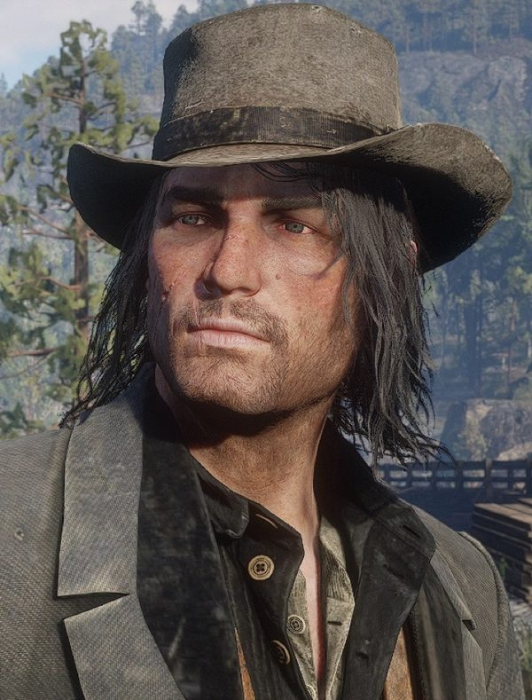
John Marston
Javier retrouve John avec Arthur dans "Enter, Pursued by a Memory" ; de retour à Colter, il rabroue les hommes qui le descendent de cheval sans ménager sa jambe. À la table de dominos de Horseshoe Overlook, John le remercie de l'avoir secouru, et Javier répond qu'il ferait de même. À Clemens Point, un repas partagé au coin du feu dévie sur les femmes et sur les raisons du départ de Javier ; John confie qu'il aimerait voir du pays un jour, Mexique compris. Un autre soir, en buvant avec lui à la table de poker, John se plaint d'Abigail et dit qu'il voudrait pouvoir oublier ce qu'il a vu. Au chapitre 3, ils volent ensemble les chevaux des Braithwaite avec Arthur.
Au chapitre 6, selon le Red Dead Wiki, Javier traite John d'arrogant quand celui-ci déclare que le gang n'est pas sa famille. En 1911, John le traque au Mexique pour le compte du Bureau. À El Presidio, le joueur décide si John le tue ou le capture vivant. S'il est capturé, Javier lui lance que Dutch ne l'a jamais aimé.

Arthur Morgan
Arthur et Javier font équipe pendant les premiers chapitres : la recherche de John, le sauvetage de Sean, les chevaux des Braithwaite et le coup du bateau à aubes. Pendant la bagarre de Valentine, dans "Americans at Rest", Arthur arrache Javier aux mains de Tommy, le costaud de la ville. À Shady Belle, Javier se moque du nouveau camp devant Arthur : l'endroit est si agréable, ironise-t-il, qu'il en regrette de geler dans les montagnes. Arthur et Dutch le libèrent à Guarma ; de retour au camp du gang sur l'île, Javier remercie Arthur, et Arthur prévient Micah que si Javier meurt, il en portera la responsabilité.
Après Guarma, Javier refuse de parler de Dutch avec Arthur, met en doute sa loyauté et l'accuse de ne penser qu'à l'argent ; Arthur répond qu'il serait parti depuis longtemps si c'était vrai. Selon le wiki, Javier lui reproche aussi d'agir dans le dos de Dutch et de briser le cœur de celui-ci. À Beaver Hollow, Arthur exhorte Bill et Javier à réfléchir par eux-mêmes. Javier se range derrière Dutch, mais hésite à pointer son arme sur Arthur et John, et il ne fait pas partie de ceux qui les poursuivent.

Bill Williamson
À Horseshoe Overlook, Bill, ivre, trouve Javier en train d'aiguiser son couteau à la table de poker et le traite de "greaser". Javier le plaque, le couteau sous la gorge, l'insulte à son tour, demande à Arthur s'il doit le tuer, puis le relâche. À Guarma, Bill veille sur Javier blessé pendant que les autres détruisent les batteries côtières. À Beaver Hollow, tous deux se demandent si John est un traître et s'il mérite la corde à Sisika.
En 1911, selon le wiki, Javier aide Bill à gagner le Mexique avant l'assaut de John sur Fort Mercer. Reyes rapporte à John qu'à ce qu'on lui a dit, les deux hommes ont payé Allende pour qu'il les cache. Coincé à El Presidio, Javier propose de livrer Bill ; si John le capture, il affirme que Bill est avec Allende et que c'est lui que John devrait chercher. Pendant la poursuite à la sortie d'Escalera, John crie à Bill qu'il tient déjà Escuella.

Micah Bell
Dans "Old Friends", Javier, Arthur et Lenny séparent Micah et Bill à Colter. À Horseshoe Overlook, Micah, agacé de sentir le regard de Javier au coin du feu, lui dit de retourner au Mexique ; Javier le frappe et répond : "Why don't you fuck off back to hell?" (et si tu retournais en enfer ?). Quand Arthur salue le coup, Javier prévient : "Next time, it will be a bullet" (la prochaine fois, ce sera une balle). Au chapitre 3, ivres, les deux hommes échangent des insultes, Micah trouvant Javier pas mal pour un "greaser", et Javier trouvant Micah pas mal pour un connard. Ils font partie des naufragés de Guarma et rejoignent Lakay ensemble, avant Dutch.

Charles Smith
Dans "Eastward Bound", Javier chevauche à côté du chariot que mènent Bill et Charles, devant celui d'Arthur et de Hosea ; quand la roue lâche, Charles reste en arrière pour aider et Javier poursuit sa route. Javier et Charles boivent avec Arthur au saloon de Valentine quand éclate la bagarre de "Americans at Rest". Dans "The First Shall Be Last", Arthur les trouve en train de surveiller Blackwater du haut d'une falaise, et les trois hommes délivrent Sean. À Beaver Hollow, selon le Red Dead Wiki, Javier raille le manque de foi de Charles envers Dutch et lui conseille de se servir de sa tête ; Charles ne relève pas. D'après la page du wiki sur les relations d'Arthur, après l'un de ces échanges, Arthur dit à Charles qu'il aurait dû laisser Javier mourir à Guarma.

Hosea Matthews
À Colter, Hosea demande à Javier de partir avec Arthur à la recherche de John, en les présentant comme "the two best fit men we've got" (les deux hommes les plus en forme qu'on ait), et les remercie tous deux à leur retour. Dans "Eastward Bound", Javier propose son aide pour la roue cassée du chariot, ce que Hosea décline. Javier réchappe du braquage de la banque de Saint-Denis où Hosea est tué.
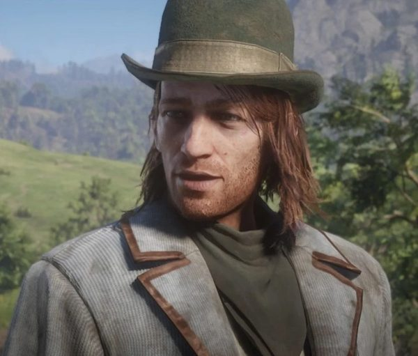
Sean MacGuire
Javier participe à la libération de Sean dans "The First Shall Be Last" et le raccompagne au camp. Quand Sean promet "Have I got stories for you..." (j'en ai, des histoires à vous raconter), Javier répond : "Yeah... I can't wait" (ouais, j'ai hâte). À Horseshoe Overlook, pendant que Javier frotte ses bottes, Sean lui fait la leçon sur le péché de vanité ; Javier rétorque que son père lui a appris à découper au couteau quiconque lui manque de respect, et lui dit de s'en aller. Dans une scène rare, à Shady Belle, Javier demande à Arthur ce qui est arrivé à Sean à Rhodes, et dit qu'il va lui manquer.

Lenny Summers
Dans "Old Friends", Dutch poste Javier et Lenny ensemble au-dessus du camp des O'Driscoll. En chevauchant vers le train de Cornwall, Javier lui demande : "You sure you're ready for this, kid?" (t'es sûr d'être prêt, petit ?). Lenny répond que bien sûr. Javier manque son saut sur le train, alors que Lenny réussit le sien. Tous deux participent au braquage de la banque de Saint-Denis, où Lenny est tué.

Abigail Marston
À Colter, c'est à la demande d'Abigail que Hosea envoie Javier et Arthur chercher John, et elle les remercie tous deux de l'avoir ramené. Au chapitre 6, d'après la page du wiki sur les relations d'Arthur, Javier met en doute sa loyauté envers Dutch. En 1911, si John le capture, Javier lui assure qu'Abigail ne voudrait pas cela, et John réplique : "Abigail would've killed you already. She always thought you was a creep" (Abigail t'aurait déjà tué ; elle t'a toujours trouvé répugnant). Sur le chemin du retour, après la livraison au ranch MacFarlane, John confie à Abigail qu'il se demande parfois si Dutch, Bill et Javier n'étaient pas simplement honnêtes avec eux-mêmes.

Jack Marston
Javier participe à l'assaut de Braithwaite Manor, dans "Blood Feuds, Ancient and Modern", pour récupérer Jack. À la fête de son retour, à Shady Belle, il chante "Cielito Lindo" pour le gang, et tout le monde accueille l'enfant à la fin de la chanson. En 1911, si John le capture, Javier lui souhaite, depuis la cellule d'El Presidio, de pourrir en enfer avec sa femme et ses enfants.

Sadie Adler
Javier est échoué à Guarma pendant que Sadie maintient la cohésion du reste du gang et le conduit à Lakay.

Susan Grimshaw
Javier accompagne à la guitare les chansons de Susan au camp. À Beaver Hollow, pendant que Susan tient Micah en joue, Javier surgit en criant que les Pinkerton arrivent. Susan se tourne vers lui, et Micah l'abat.

Kieran Duffy
À Horseshoe Overlook, Javier aborde Kieran, occupé à soigner un cheval, pour lui dire qu'il restera toujours un O'Driscoll. Kieran a beau protester qu'il a fait ses preuves, Javier lui répond qu'il a surtout montré avec quelle facilité il trahit ses amis, et le prévient qu'il garde un œil sur lui, même si Dutch lui fait confiance. Arthur peut prendre le parti de Javier. Kieran rappelle alors à Javier qu'il a sauvé la vie d'Arthur.

Uncle
À Horseshoe Overlook, quand Javier vient de déposer de l'argent dans la caisse du camp, l'Oncle s'assoit boire un verre avec lui. Javier rentre d'avoir détroussé un soldat sur la route ; l'Oncle, lui, prétend se réserver pour les gros coups. Javier prend sa guitare, et d'autres soirs il accompagne les chansons de l'Oncle. Au chapitre 6, d'après la page du wiki sur les relations d'Arthur, Javier met en doute la loyauté de l'Oncle envers Dutch.

Karen Jones
Elle fait partie de ses complices du braquage de Tucson, au milieu des années 1890 (voir Origines). Javier accompagne ses chansons à la guitare dans plusieurs camps. Au chapitre 6, Karen et lui escortent Eagle Flies jusqu'à Beaver Hollow, quand celui-ci vient annoncer que l'armée a saisi les chevaux des Wapiti.

Simon Pearson
Près de la marmite de Horseshoe Overlook, Pearson et Javier conviennent que la boue vaut mieux que la neige. Pearson lui refile un tuyau : une femme et quelques hors-la-loi de Watson's Cabin y cacheraient de l'argent. Javier promet de lui dire ce qu'il en est s'il le trouve.

Tilly Jackson
D'après la page du wiki sur les scènes de camp, pendant la fête du retour de Sean, Javier vient chanter "El Coyotito" à Tilly, guitare en main, près des tentes des femmes.

Orville Swanson
À Horseshoe Overlook, Swanson trouve Javier en prière derrière un tonneau et lui lance qu'"it's not too late to repent, my Mexican friend" (il n'est pas trop tard pour te repentir, mon ami mexicain). Javier rétorque que bien des prêtres seraient ravis d'entendre la confession de Swanson lui-même. Swanson le déclare perdu ; Arthur répond qu'ils le sont tous, et Javier lui fait signe du pouce. Dans "Who is Not Without Sin", si Arthur salue Javier en portant le révérend ivre jusqu'à sa tente, Javier lâche : "Not again" (encore ?).

Josiah Trelawny
Trelawny accompagne Javier et Arthur pour délivrer Sean dans "The First Shall Be Last", et détourne l'attention de deux chasseurs de primes pour que les deux hommes puissent les éliminer en silence. Sur le bateau à aubes de "A Fine Night of Debauchery", Trelawny, Strauss, Arthur et Javier montent à bord ensemble, et une fois le coffre vidé, tous quatre sautent par-dessus bord et regagnent la rive à la nage.

Leopold Strauss
Sur le bateau à aubes de "A Fine Night of Debauchery", Strauss indique à Arthur comment jouer à la table de poker pendant que Javier se fait passer pour un garde. Les quatre hommes se partagent l'important butin du coffre une fois à terre.

Tavish Gray
Dans "Horse Flesh for Dinner", Tavish Gray reçoit Arthur, John et Javier aux écuries de Caliga Hall et leur promet 5 000 dollars pour les chevaux de prix des Braithwaite. L'acheteur paie bien moins une fois les chevaux livrés.

Catherine Braithwaite
Javier, Arthur et John volent les chevaux des écuries de Catherine Braithwaite dans "Horse Flesh for Dinner".

Leviticus Cornwall
Javier participe à l'attaque du train de Cornwall dans "Who the Hell is Leviticus Cornwall?". Au chapitre 6, il combat l'armée avec le gang et les Wapiti à la raffinerie de Cornwall.

Alberto Fussar
À Guarma, les soldats de Fussar traînent Javier, prisonnier, derrière un âne devant Aguasdulces. Selon le Red Dead Wiki, ils le battent et l'interrogent sur les autres membres du gang, sans rien en tirer. Il reste enfermé dans une cage jusqu'à ce que Dutch et Arthur le libèrent.
Hercule Fontaine
Une fois les naufragés enchaînés par la milice de Levi Simon, Hercule Fontaine tend une embuscade à la colonne ; Arthur abat les gardes et les prisonniers se libèrent. Javier est touché à la jambe pendant la fuite et capturé.

Agustin Allende
En 1911, Javier vit au Mexique sous la protection du colonel Allende ; le wiki en fait un homme de main d'Allende. Dans "The Demon Drink", Allende raconte à John ce qu'il sait de la famille d'Escuella.

Vincente de Santa
Dans "Mexican Caesar", de Santa propose à John 20 000 pesos et des renseignements sur la cachette de Javier en échange de son aide. Dans "Cowards Die Many Times", il lui assure que Bill et Javier sont prisonniers dans une église de Chuparosa ; aucun des deux n'y est, et les soldats assomment John.

Abraham Reyes
Reyes promet à John de lui trouver Javier et Bill, et apprend que Javier se trouve à El Presidio. En chemin, il demande si Javier a appris un peu d'espagnol à John, qui se souvient surtout de "cabrón" (salaud), souvent employé. Pendant l'assaut, Reyes envoie John chercher Escuella. Si John capture Javier, celui-ci lui lance une insulte depuis sa cellule quand John part avec Reyes.

Landon Ricketts
Dans "Landon Ricketts Rides Again", Ricketts apprend à John que les hommes qui l'entourent lui ont parlé d'un certain M. Escuella. Par l'intermédiaire de Ricketts, John demande à Emilio Fortuna si l'homme correspond au signalement de Javier et s'il était accompagné d'un grand Américain.

Edgar Ross
Ross retient Abigail et Jack pour obliger John à livrer ses anciens compagnons, dont Javier. Après El Presidio, Javier, mort ou vif, est remis à Ross et à Fordham près de la frontière. Quand le Bureau l'envoie ensuite traquer Dutch, John proteste : "I got you Williamson and Escuella. It's over!" (je vous ai livré Williamson et Escuella, c'est terminé !).

Archer Fordham
Si John ramène Javier vivant, Fordham lui annonce qu'il "gets to see how far the hand of justice can reach" (va découvrir jusqu'où s'étend le bras de la justice) et le fait monter en voiture. Si John ramène le corps, Fordham observe : "He's not looking very... healthy. We told you to keep them alive" (il n'a pas l'air en très bonne santé ; on vous avait dit de les garder en vie).

Luisa Fortuna
Selon le Red Dead Wiki, quand Landon Ricketts prononce le nom de Javier devant Luisa, elle répond qu'elle s'en souvient de la prison, où de mauvaises gens parlaient de lui.
Compétences, armes et chevaux
Musique
Javier joue de la guitare au camp et accompagne les chansons du gang. D'après la page du wiki consacrée aux scènes de camp, il joue "Poor Lonesome Cowboy" pour Karen et Pearson, "Otis Miller" pour l'Oncle, Karen et Pearson, "One Eyed Riley" pour l'Oncle, Karen et Susan, et "I Wouldn't Marry" pour Susan et Karen. À la fête donnée pour le retour de Sean, il accompagne "The Louisville Maid", "Ring Dang Doo" et "Rye Whiskey", et chante "El Coyotito". À la fête du retour de Jack, à Shady Belle, il chante "Cielito Lindo", puis, plus tard dans la soirée, accompagne Karen, l'Oncle et Susan sur "The Heartland Stage Company".
Couteaux, pistes et coups montés
Javier est l'un des deux adversaires, avec Micah, qu'Arthur peut affronter au Five Finger Fillet au chapitre 3. Au chapitre 2, il demande à Arthur du laurier-rose. Selon le wiki, on le voit empoisonner des couteaux de lancer lors de l'une de ses demandes, puis il dépose régulièrement des couteaux de lancer devant la tente d'Arthur. Dans "Enter, Pursued by a Memory", il lit les traces dans la neige, conseille à Arthur de prendre le fusil sur son cheval et les fait chevaucher dans la rivière pour que les loups perdent leur piste. Dans "The First Shall Be Last", Arthur et lui éliminent deux chasseurs de primes en silence, au couteau. Sur le bateau à aubes de "A Fine Night of Debauchery", il se fait passer pour un garde. Dans "Horse Flesh for Dinner", il attache ensemble les trois chevaux volés aux Braithwaite.
Activités avec Arthur et vie au camp
Deux activités se jouent avec lui, le cambriolage d'une ferme et une partie de pêche ; elles sont détaillées dans la section Missions. Il verse sa part à la caisse commune. Quand Arthur reste trop longtemps loin du camp, Dutch peut envoyer Javier, comme Bill ou Charles, le ramener. Si Arthur se montre trop hostile envers le gang, Javier peut le frapper et le chasser du camp.
Armes
En 1899, son arme de poing est un Double-Action Revolver unique. Son canon dépasse un peu celui du modèle vendu en armurerie et sa détonation ne ressemble à aucune autre ; la finition est argentée, rehaussée de gravures noires, et la crosse noire est incrustée d'argent. L'icône "New Game" du menu du jeu montre ce revolver dans sa main. Dans les cinématiques de "My Last Boy" et au début de "Rob a Homestead", il tient pourtant un Cattleman Revolver ordinaire. Il se sert aussi d'une Carbine Repeater ou d'une Lancaster Repeater, et porte un couteau unique ainsi qu'un couteau de lancer qu'il n'utilise jamais. En 1911, le wiki lui attribue un Cattleman Revolver ; si John le tue, on voit sur son corps un étui à couteau vide.
Chevaux
En 1899, Javier monte Boaz, un American Paint gris overo selon le wiki. Dans "Enter, Pursued by a Memory", c'est sur Boaz que John, blessé, est installé pour rentrer à Colter, et après "The First Shall Be Last", Sean revient au camp sur son dos avec Javier. Dans "Horse Flesh for Dinner", les trois chevaux volés sont attachés à Boaz. Boaz est présent à Shady Belle et à Lakay, sans être monté pendant ces chapitres. Javier le reprend pour l'attaque de la raffinerie de Cornwall et pour "Our Best Selves", et s'enfuit sur lui de Beaver Hollow devant les Pinkerton ; on ne revoit plus le cheval ensuite. En 1911, il monte un Cleveland Bay.
Missions
Le Red Dead Wiki anglais recense 23 missions principales de Red Dead Redemption 2 pour Javier, de la recherche de John dans les Grizzlies jusqu'à l'affrontement de Beaver Hollow, plus deux activités de compagnon : le cambriolage d'une ferme et une partie de pêche avec Arthur. L'édition française compte aussi 23 missions, mais sa liste n'est pas identique : elle ajoute "Dear Uncle Tacitus", la traversée de retour depuis Guarma, omet "Lost and Not Quite Found" et ne mentionne aucune activité de compagnon. Javier n'apparaît dans aucune mission de l'épilogue. C'est lui qui confie à Arthur deux missions de l'histoire, "Americans at Rest" et "The First Shall Be Last". Pour Red Dead Redemption, le wiki ne retient qu'une mission, "The Gates of El Presidio". Javier n'est jouable dans le mode histoire d'aucun des deux jeux.
Red Dead Redemption 2
| Mission | Chapitre | Rôle de Javier |
|---|---|---|
| Enter, Pursued by a Memory | 1. Colter | Hosea lui demande de partir avec Arthur à la recherche de John ; il remet à Arthur un fusil à canon scié. Il suit les traces dans la neige, tire un coup de feu en l'air pour localiser John et le porte jusqu'à son cheval pendant qu'Arthur s'occupe des loups. |
| Old Friends | 1. Colter | Avec Arthur et Lenny, il sépare Micah et Bill, qui se battent dans la cabane des hommes. Lors de l'attaque du camp O'Driscoll, Dutch le poste sur une hauteur avec Lenny pour abattre les ennemis à distance, puis tous deux descendent les chevaux jusqu'au camp. |
| Who the Hell is Leviticus Cornwall? | 1. Colter | Dutch lui confie les deux premières voitures avec Lenny. Quand la dynamite ne part pas, il saute sur le train depuis le haut du tunnel avec Arthur et Lenny, rate son saut et reste en arrière. Il revient ensuite à cheval avec Dutch, Bill, Charles et Micah pour aider à venir à bout des derniers gardes. |
| Eastward Bound | 1. Colter | Accompagne à cheval le chariot de Bill et Charles pendant la descente de la montagne. Quand la roue du chariot d'Arthur et d'Hosea se détache, il propose son aide. Il attend à l'entrée de Horseshoe Overlook, saute à l'arrière du chariot et assure à Hosea que l'endroit est bon. |
| Americans at Rest | 2. Horseshoe Overlook | Donneur de mission. Il boit au Smithfield's Saloon de Valentine avec Charles et deux femmes jusqu'à ce que Bill déclenche une bagarre. Tommy le roue de coups jusqu'à l'intervention d'Arthur. Dutch l'envoie ensuite avec Trelawny chercher des nouvelles de Sean. |
| The First Shall Be Last | 2. Horseshoe Overlook | Donneur de mission. Depuis une falaise qui domine Blackwater, il signale les Pinkerton, les chasseurs de primes et les avis de recherche de Dutch et d'Hosea. Il élimine l'un des deux chasseurs de primes postés au bord de la rivière pendant que Trelawny détourne leur attention, remonte le canyon en combattant avec Arthur et ramène au camp Sean, enfin libéré. |
| A Strange Kindness | 2. Horseshoe Overlook | Cité par le wiki. La page de la mission ne lui attribue aucune action propre. |
| Horse Flesh for Dinner | 3. Clemens Point | Engagé avec Arthur et John par Tavish Gray pour voler les chevaux de prix des Braithwaite. À l'écurie, il peut assommer le palefrenier si Arthur ne s'en charge pas. Il attache les trois chevaux ensemble et monte celui de tête pendant la fuite. Les bêtes sont vendues 700 dollars, loin des 5 000 promis. |
| Blood Feuds, Ancient and Modern | 3. Clemens Point | Accompagne Dutch, Arthur, Hosea, John, Charles, Bill et Lenny à Braithwaite Manor pour récupérer Jack. |
| The Battle of Shady Belle | 3. Clemens Point | Cité par le wiki. La page de la mission ne lui attribue aucune action propre. |
| A Fine Night of Debauchery | 4. Saint-Denis | Monte à bord du bateau à aubes avec Arthur, Trelawny et Strauss, déguisé avec l'uniforme d'un garde. Il conduit Arthur et le chef de salle jusqu'au coffre, assomme un garde et tient le chef de salle en joue. Quand le garde dont il a pris les vêtements donne l'alerte, il gagne le pont avec les autres en combattant et saute dans le fleuve. |
| Banking, The Old American Art | 4. Saint-Denis | Participe au braquage de la Lemoyne National Bank. Il s'enfuit par les toits, se cache avec Dutch, Arthur, Micah, Bill et Charles jusqu'à la nuit et embarque sur les quais. |
| Lost and Not Quite Found | 4. Saint-Denis | Pris dans la tempête à bord de l'Antenor. Il gagne un canot de sauvetage avec Dutch, Micah et Bill, tandis que la chute de caisses coupe Arthur du groupe. |
| Welcome to the New World | 5. Guarma | Retrouvé par Arthur autour d'un feu, sur la plage, avec Dutch, Micah et Bill. Enchaîné par la milice de Levi Simon, il est touché à la jambe et repris quand l'embuscade d'Hercule Fontaine libère les autres. |
| A Kind and Benevolent Despot | 5. Guarma | Traîné derrière un âne et raillé par Fussar et ses soldats devant Aguasdulces. Dutch et Arthur incendient la raffinerie pour faire diversion et le libèrent ; Dutch l'emporte, inconscient, à travers les champs de canne. |
| Hell Hath No Fury | 5. Guarma | Absent de la bataille de Cinco Torres, le temps de se remettre. Une fois le combat terminé, Dutch et Bill vont le chercher. |
| Paradise Mercifully Departed | 5. Guarma | Reste en arrière sous la garde de Bill, encore convalescent, pendant que les autres détruisent les batteries. Il repart ensuite vers l'Amérique avec le gang. |
| Fleeting Joy | 5. Guarma | Rejoint le camp du gang à Lakay avec Micah, hors champ, avant l'arrivée de Dutch puis de Bill. |
| That's Murfree Country | 5. Guarma | Cité par le wiki pour l'installation du gang à Beaver Hollow. La page de la mission ne lui attribue aucune action propre. |
| A Rage Unleashed | 6. Beaver Hollow | Escorte Eagle Flies jusqu'à Beaver Hollow avec Karen, quand le jeune Wapiti vient annoncer que l'armée a confisqué les chevaux de sa tribu. |
| My Last Boy | 6. Beaver Hollow | Cité par le wiki pour la bataille des champs pétrolifères de Cornwall, aux côtés des Wapiti. |
| Our Best Selves | 6. Beaver Hollow | Participe à l'attaque du train de l'armée. Après la chute de John, touché par balle, Dutch annonce qu'il va le chercher et repart avec Javier, Micah et Joe. Les quatre reviennent sans lui, et Dutch et Micah annoncent à Arthur que John n'a pas survécu. |
| Red Dead Redemption | 6. Beaver Hollow | Surgit pendant l'affrontement de Beaver Hollow pour prévenir que les Pinkerton arrivent ; l'avertissement détourne l'attention de Susan, que Micah abat. Arthur lui demande, ainsi qu'à Bill, de réfléchir par eux-mêmes. Il se range derrière Dutch, et ne fait pas partie des hommes qui poursuivent Arthur et John quand les Pinkerton attaquent. |
Red Dead Redemption 2 : activités de compagnon
| Activité | Chapitre | Rôle de Javier |
|---|---|---|
| Rob a Homestead | 2 ou 3 | Proposée à Horseshoe Overlook ou à Clemens Point, une fois "The First Shall Be Last" terminée. Il emmène Arthur à Chez Porter, le prévient que la famille parle un anglais bien à elle, met le feu aux écuries pour faire sortir ses membres et les affronte à l'arme à feu. Il demande ensuite à Arthur de l'aider à déplacer une caisse qui cache le magot. Gain : 175 dollars. |
| Fishing | 3. Clemens Point | Disponible après "The New South". Il part avec Arthur à Ringneck Creek pêcher l'achigan à petite bouche. Comme Arthur ne prend rien, Javier lui donne des grillons comme appât, puis rentre ; le joueur peut continuer à pêcher ou repartir avec lui. |
Red Dead Redemption
Javier est nommé bien avant d'apparaître. Dans "The Assault on Fort Mercer" (acte I), un membre de la bande fait prisonnier révèle que Bill a fui au Mexique, et John en déduit qu'il est allé retrouver Javier Escuella. Pendant tout l'acte II, John recherche les deux hommes au Nuevo Paraíso, où le colonel Allende les protège.
| Mission | Acte | Rôle de Javier |
|---|---|---|
| The Gates of El Presidio | Acte II : Nuevo Paraíso | Retrouvé par John dans une réserve d'El Presidio pendant l'assaut des rebelles. Il propose de livrer Bill et Dutch, renverse une caisse sur John et s'enfuit par une fenêtre. Le joueur choisit ensuite de l'abattre ou de le capturer vivant ; mort ou prisonnier, il est remis à Ross et à Fordham près de la frontière. |
Personnages notables tués par Javier
Le Red Dead Wiki ne retient comme meurtres notables de Javier que les membres de la famille Porter. La page de "Rob a Homestead" en nomme cinq, tués par Arthur ou par Javier selon le déroulé du combat. Le tableau y ajoute le chasseur de primes abattu dans "The First Shall Be Last". Les O'Driscoll, les gardes des Braithwaite et du Grand Korrigan et les soldats tués aux côtés d'Arthur lors des fusillades ne sont pas détaillés. Dans "Horse Flesh for Dinner", Javier se contente d'assommer le palefrenier. Il ne tue personne dans Red Dead Redemption.
| Nom | Mission | Circonstances |
|---|---|---|
| Pappy, Newt, Finney, Mal et Edie Porter | Rob a Homestead | Selon le joueur. Chacun des cinq peut tomber sous les balles d'Arthur ou de Javier lors de la fusillade qui suit l'incendie des écuries. D'autres membres de la famille, sans nom, sont tués par les deux hommes. |
| Chasseur de primes de Skelding | The First Shall Be Last | Histoire. L'un des deux hommes qui gardent la rivière, tué au couteau par Javier pendant que Trelawny simule une crise et qu'Arthur s'occupe de l'autre. |
Citations
Les répliques ci-dessous sont reproduites telles qu'elles sont prononcées dans le jeu, en anglais, avec la mission et la personne à qui elles s'adressent. La réplique du camp provient de la page du Red Dead Wiki consacrée aux scènes de camp ; deux répliques de la poursuite d'El Presidio et celles du multijoueur sont tirées de sa liste de citations, qui ne précise le plus souvent pas de mission. Les autres sont vérifiées sur les transcriptions des missions. Les répliques déjà citées dans la section Personnalité ne sont pas reprises ici.
Red Dead Redemption 2, chapitre 1
We had the money, it seemed fine, then suddenly they were everywhere.
Enter, Pursued by a Memory (RDR2, chapitre 1), à Arthur, qui lui demande ce qui s'est passé sur le ferry de Blackwater. Traduction : « On avait l'argent, tout avait l'air d'aller, et d'un coup ils étaient partout. »Dutch killed a girl in a... bad way, but it was a bad situation.
Enter, Pursued by a Memory (RDR2, chapitre 1), à Arthur, à propos d'Heidi McCourt ; Arthur répond que ça ne ressemble pas à Dutch. Traduction : « Dutch a tué une fille d'une... sale manière, mais la situation était mauvaise. »You'll be fine. It's just like a... a dog bite.
Enter, Pursued by a Memory (RDR2, chapitre 1), à John, blessé par les loups, pendant la descente ; John répond qu'il a connu un homme mort une heure après une morsure de chien. Traduction : « Tu vas t'en remettre. C'est comme une... une morsure de chien. »Ay, careful idiotas, it's his leg.
Enter, Pursued by a Memory (RDR2, chapitre 1), à Bill et Lenny, qui descendent John de cheval sans ménagement à Colter. Traduction : « Ay, doucement, idiotas, c'est sa jambe. »
Red Dead Redemption 2, chapitres 2 et 6
Well, I must say... you got a fine way with the women, amigo.
Americans at Rest (RDR2, chapitre 2), à Arthur, qui vient de faire fuir les deux femmes du comptoir. Traduction : « Eh bien, je dois dire... tu sais t'y prendre avec les femmes, amigo. »Place is crawling with Pinkertons... bounty hunters... pictures of Dutch and Hosea.
The First Shall Be Last (RDR2, chapitre 2), à Arthur, à propos de Blackwater. Traduction : « La ville grouille de Pinkerton... de chasseurs de primes... de portraits de Dutch et d'Hosea. »There's Pinkertons coming, fast.
Red Dead Redemption (RDR2, chapitre 6), pendant l'affrontement de Beaver Hollow, juste avant que Micah n'abatte Susan. Traduction : « Les Pinkerton arrivent, et vite. »
Camp
Oh, well, in that case, I'm sure there's priests who will happily take your confession.
Au camp (RDR2), au révérend Swanson, qui vient de lui dire qu'il n'est "not too late to repent" (pas trop tard pour se repentir). Traduction : « Ah, dans ce cas, je suis sûr que des prêtres se feront un plaisir d'entendre ta confession. »
Red Dead Redemption, acte II
Hello, brother. It's good to see you. I heard you was coming. You took your time, no?
The Gates of El Presidio (RDR1, acte II), à John, qui le découvre dans une réserve du fort. Traduction : « Salut, mon frère. Content de te voir. J'avais entendu dire que tu venais. Tu as pris ton temps, hein ? »So now you do the government's work?
The Gates of El Presidio (RDR1, acte II), à John, qui répond : "And what do you do? You just work for a different government." (et toi, tu fais quoi ? Tu travailles juste pour un autre gouvernement). Traduction : « Alors maintenant, tu fais le sale boulot du gouvernement ? »We thought you was dead, brother. I promise. I'm telling the truth. Besides, I can give you Bill. And Dutch... Dutch is in Colombia. I can take you straight to him.
The Gates of El Presidio (RDR1, acte II), à John, qui vient de lui dire "it might as well be you" (autant que ce soit toi). Traduction : « On te croyait mort, mon frère. Je te le jure. Je dis la vérité. Et puis je peux te livrer Bill. Et Dutch... Dutch est en Colombie. Je peux t'emmener droit à lui. »You got it all wrong, brother. I've always loved you, even now.
The Gates of El Presidio (RDR1, acte II), à John, qui vient de lui demander : "You left me to die, to save your own skin and now you expect me to care about you?" (tu m'as laissé mourir pour sauver ta peau, et maintenant tu voudrais que je me soucie de toi ?). Javier renverse ensuite une caisse sur lui et saute par la fenêtre. Traduction : « Tu n'as rien compris, mon frère. Je t'ai toujours aimé, même aujourd'hui. »Go back to your farm, John!
The Gates of El Presidio (RDR1, acte II), après avoir sauté par la fenêtre. Traduction : « Retourne à ta ferme, John ! »You do not have the heart to kill me!
The Gates of El Presidio (RDR1, acte II), lancé à John pendant la poursuite. Traduction : « Tu n'as pas le cran de me tuer ! »You won't get me alive, John!
The Gates of El Presidio (RDR1, acte II), lancé à John pendant la poursuite. Traduction : « Tu ne m'auras pas vivant, John ! »You were always weak, John!
The Gates of El Presidio (RDR1, acte II), lancé à John pendant la poursuite. Traduction : « Tu as toujours été faible, John ! »Tell...tell your wife it's the Lord I praise.
The Gates of El Presidio (RDR1, acte II), une fois blessé pendant la poursuite (liste de citations du Red Dead Wiki). Traduction : « Dis... dis à ta femme que c'est le Seigneur que je loue. »Finish me, you coward!
The Gates of El Presidio (RDR1, acte II), une fois blessé pendant la poursuite (liste de citations du Red Dead Wiki). Traduction : « Achève-moi, espèce de lâche ! »
Red Dead Redemption, acte II : si John le capture
It's a little late for revenge, John.
The Gates of El Presidio (RDR1, acte II), ligoté, à John, qui vient de lui annoncer : "You're going to be locked up for a hell of a long time, unless they choose to hang you." (tu vas rester enfermé un sacré bout de temps, à moins qu'ils décident de te pendre). Traduction : « C'est un peu tard pour la vengeance, John. »Go to hell, you pathetic fool. Dutch never liked you, you know?
The Gates of El Presidio (RDR1, acte II), ligoté, à John, qui vient de les traiter, Bill et lui, de "two crazy men" (deux cinglés). Traduction : « Va au diable, pauvre imbécile. Dutch ne t'a jamais aimé, tu sais ? »Ah, you piece of shit. I hope you sure know what you're doing, brother. You sold me out. Didn't that life we had mean nothing to you?
The Gates of El Presidio (RDR1, acte II), pendant que John le conduit à la prison du fort. Traduction : « Ah, espèce d'ordure. J'espère que tu sais ce que tu fais, mon frère. Tu m'as vendu. La vie qu'on a eue, ça ne comptait donc pas pour toi ? »Ah, ah, you puto. Ah. One day, one day I promise you, you're gonna regret this.
The Gates of El Presidio (RDR1, acte II), dans la cellule, après que John l'a jeté sur le sol de pierre ; John répond : "One day is about all you got left." (un jour, c'est à peu près tout ce qu'il te reste). Traduction : « Ah, ah, espèce de puto. Ah. Un jour, un jour, je te le promets, tu le regretteras. »What I knew was that you was always a puto. And you're still a puto!
The Gates of El Presidio (RDR1, acte II), dans la cellule, à John, qui vient de dire que leur ancienne vie "was just an excuse and we all knew" (n'était qu'un prétexte, et on le savait tous). Traduction : « Ce que je savais, c'est que tu as toujours été un puto. Et que tu es toujours un puto ! »Yeah, go with your puto!
The Gates of El Presidio (RDR1, acte II), sa dernière réplique du jeu dans ce cas de figure, quand Reyes appelle John. Traduction : « C'est ça, va rejoindre ton puto ! »
Multijoueur de Red Dead Redemption
Hahahaha... you still hit like a child!
Multijoueur de Red Dead Redemption, réplique du modèle de personnage Javier Escuella. Traduction : « Ha ha ha ha... tu frappes toujours comme un gamin ! »So you think you're tough now, eh? Hahaha.
Multijoueur de Red Dead Redemption, réplique du modèle de personnage Javier Escuella. Traduction : « Alors comme ça, tu te crois costaud maintenant, hein ? Ha ha ha. »
Conception et interprétation
Le casting
Dans Red Dead Redemption (2010), Javier Escuella a la voix d'Antonio Jaramillo. Dans Red Dead Redemption 2 (2018), le rôle revient à Gabriel Sloyer, qui lui prête à la fois sa voix et son jeu en capture de performance. Sloyer est un acteur américain né à Long Island, dans l'État de New York, qui a débuté au théâtre, à Broadway et off-Broadway. À la télévision, on l'a vu dans Narcos, où il joue le journaliste Manuel de Dios Unanue, Orange Is the New Black, Power, Limitless, The Blacklist et Jessica Jones. Avant Red Dead Redemption 2, il avait déjà travaillé pour Rockstar sur Grand Theft Auto V (2013), comme voix et interprète en capture de mouvement du trafiquant d'armes Oscar Guzman. Dans un entretien mené par Tom Phillips et publié le 12 décembre 2018, Eurogamer relève que c'est grâce à ce rôle que le studio le connaissait.
Sloyer raconte à Eurogamer qu'il a signé sans savoir sur quel jeu il travaillait, ni même comment s'appelait son personnage. Les premières scènes qu'il tourne sont soit le sauvetage de John face aux loups, soit la bagarre du saloon. Les bottes et la langue font comprendre aux acteurs qu'ils tournent un western, et il devine lequel Rockstar prépare ; il lui faut les deux premiers mois pour savoir qui il joue. Le tournage dure cinq ans, à raison de trois semaines de travail pour trois semaines de pause ; dans le même temps, il joue dans sept séries, plusieurs films et plusieurs pièces. Il explique que les répliques arrivaient souvent la veille, le matin même ou sur le chemin du plateau, et qu'un acteur sans texte dans une scène n'en recevait même pas les pages.
Dans un entretien mené par Liz Lanier et publié par Variety le 24 décembre 2018, Sloyer précise que les séances duraient de 8 ou 9 heures à 17 ou 18 heures, dans un immense entrepôt vide, dans un lieu tenu secret à une heure environ de Manhattan, où il côtoyait de 20 à 35 personnes à chaque tournage. Il le décrit comme l'un des meilleurs plateaux qu'il ait connus, en rappelant qu'il ne peut parler que pour les acteurs, pas pour les développeurs. Il salue le travail du réalisateur Rod Edge. Dans l'entretien accordé à Eurogamer, il se souvient des acteurs qui reprenaient le rôle de leur personnage à la pause déjeuner : Benjamin Byron Davis (Dutch) s'attaquait aux mots croisés du New York Times, Noshir Dalal (Charles) enchaînait les pompes sur un bras, Rob Wiethoff (John) parlait des joies du béton à gâcher et Roger Clark (Arthur) travaillait son imitation de Bane.
Construire le personnage
Interrogé par Matt Morgans pour VGR, dans un entretien publié le 18 décembre 2018, sur sa façon de construire Javier, Sloyer rappelle que les joueurs du premier jeu connaissaient déjà la fin de son histoire. Il voulait les conquérir en appuyant sur la loyauté, la nostalgie et le côté attachant de Javier, pour que sa rupture avec John soit plus douloureuse encore. À la question de savoir s'il s'était inspiré du jeu d'Antonio Jaramillo, il répond que son modèle était le bandit Joaquin Murrieta : il l'imaginait ruminer d'un campement à l'autre, chanter des ballades nostalgiques et tenter d'échapper à son passé. Il ajoute que le rôle dépassait de loin le doublage, puisque sa démarche, ses chansons et ses expressions ont toutes été captées en direct, et que les scènes où Javier est traîné dans la boue au bout d'une corde ont réellement été jouées. Il s'amuse à penser que les tenues de Javier lui doivent peut-être quelque chose : "After all, he is the best dressed man in camp." (Après tout, c'est l'homme le mieux habillé du camp.)
Sloyer puise dans sa propre histoire familiale. Il raconte à Eurogamer que son père, qui s'appelle lui aussi Javier, a émigré aux États-Unis et changé de nom pour paraître plus américain, et qu'il a eu du mal à trouver sa place. Il décrit un personnage "looking for home, somewhere to belong" (en quête d'un foyer, d'un endroit auquel appartenir), et voit dans les chansons sur le Mexique que Javier chante au coin du feu la preuve qu'il est tiraillé entre ses deux pays. À Variety, il confie que son père répétait vouloir une famille américaine, et que les immigrés finissent parfois coincés entre deux cultures, plus vraiment chez eux dans leur pays d'origine sans être tout à fait acceptés dans le nouveau. À Variety, il raconte que beaucoup de joueurs ont commencé le jeu en pensant détester Javier avant de s'y attacher, ce qui rendait sa fin dans le premier jeu plus triste encore ; à VGR, que certains regrettaient la façon dont ils l'avaient traité dans le premier jeu.
La musique tient une grande place dans le rôle. Sloyer explique à Eurogamer qu'il a joué et chanté plus de huit chansons à la guitare. Un animateur avait déjà conçu la posture assise de Javier près du feu, si bien qu'il devait jouer dans une position tordue, en combinaison de capture dont les capteurs lui rentraient dans les cuisses, avec une lourde caméra fixée sur la tête et des bandages munis de capteurs sur les doigts. Il a aussi enregistré ses répliques en plusieurs versions, selon qu'Arthur se tient près ou loin, qu'il est de bonne ou de mauvaise humeur, et dans bien d'autres situations. À Variety, il se dit fier d'incarner un personnage latino de premier plan, et cite la fête où Javier chante "Cielito Lindo" et où tout le gang reprend en chœur ; selon lui, des internautes ont écrit avoir pleuré et s'être levés pour applaudir. À la convention SacAnime de Sacramento, le 8 juin 2019, il qualifie Javier de "Brad Pitt of the gang" (le Brad Pitt de la bande) et lui prête un cœur brisé par le Mexique.
Lors de la même table ronde, Sloyer revient sur l'un de ses choix pendant la confrontation de Beaver Hollow, dans la mission "Red Dead Redemption" : Javier tient son arme pointée vers le haut au lieu de viser Arthur et John. Il dit avoir dû se battre pour l'imposer, l'équipe voulant qu'il vise, et avoir répondu que John était son frère.
Le nom de famille
Rob Wiethoff, l'interprète de John Marston, raconte l'histoire de ce nom dans une vidéo publiée sur sa chaîne YouTube le 2 novembre 2025. Il dit l'avoir mal prononcé lors d'une lecture du scénario, l'un de ses premiers jours sur Red Dead Redemption, ce qui a fait rire les autres autour de la table. Le réalisateur a alors choisi de garder sa version, estimant que John écorcherait sans doute ce nom. Selon Wiethoff, John le prononce ainsi depuis.
Contenu coupé
Sloyer raconte à Eurogamer que le sauvetage de John dans les montagnes a d'abord été tourné autrement, avec une scène où Javier repousse des loups dans une grotte, une torche à la main. Il ajoute que la distribution a tourné beaucoup de scènes finalement coupées, et qu'il se demandait parfois si certaines fins n'étaient filmées que pour brouiller les pistes. Les fichiers de Red Dead Redemption 2 contiennent un smoking pour Javier, rattaché à la tenue de gala de la réception de "The Gilded Cage", une mission à laquelle il ne participe pas dans la version finale. On y trouve aussi une tenue inutilisée à cache-poussière, que le Red Dead Wiki rattache à son cambriolage de ferme, deux gilets, un gilet bas, une queue-de-cheval, une cravate, un ceinturon, un manteau et trois chemises.
Javier possède plusieurs barbes inutilisées de longueurs différentes, dont certaines apparaissent dans les bandes-annonces. À Guarma, sa barbe garde la même longueur, contrairement à celle des autres membres du gang. Une bande-annonce le montre avec un pantalon à motif de squelette, et des illustrations promotionnelles l'habillent tout autrement que dans le jeu final. Son cheval Boaz y a une robe overo noire dans la première bande-annonce. Une demande d'objet supprimée semble avoir concerné un sombrero pour Javier, et un couteau de lancer ainsi que des versions préliminaires de son ceinturon sont restés inutilisés. La chasse, le tir sur cible et le vol de bétail (ce dernier avec John) étaient prévus comme activités avec Javier. Les fichiers laissent penser que des dialogues et une chanson à la guitare avaient été prévus pour Javier lors d'une fête supprimée à Dewberry Creek, puis abandonnés ou réemployés. Une illustration conceptuelle du gang semble le montrer avec Bill et Karen Jones, une autre avec Charles Smith et Molly O'Shea.
Accueil
Avant la sortie
Dans un dossier de Game Informer consacré aux sept personnages du premier jeu qui reviennent dans la préquelle, publié le 28 septembre 2018, un mois avant la sortie, Jill Grodt décrit le Javier de Red Dead Redemption comme plus rusé que Bill Williamson et plus prudent que John Marston, un hypocrite plein de ressources à en juger par ses actes. Elle relève aussi son art de se sortir d'affaire par la parole, sa propension à laisser les autres se battre et la cartouchière qu'il arbore pour afficher sa dangerosité.
Classements
- Game Informer, 27 décembre 2018 : 15e des 24 membres du gang Van der Linde dans le classement de la rédaction. Elle note qu'après ses fanfaronnades du premier jeu, Javier occupe peu le devant de la scène dans la préquelle, le plus souvent silencieux près du feu ou en train de jouer quelques chansons, mais le juge sans peine le mieux habillé de la bande (Arthur mis à part), et estime que la scène où il roue Micah de coups lui fait gagner à elle seule plusieurs places.
- TheGamer, 10 août 2019 : 7e des dix membres les plus importants du gang, dans un classement de Jerrad Wyche. Selon lui, Javier commence comme un membre sympathique et digne de confiance, admire Dutch comme son meilleur ami dans le gang, Bill Williamson, et devient d'une susceptibilité extrême dès qu'on touche à son chef, quand celui-ci commence à perdre la raison.
Autres médias et postérité
Multijoueur
Javier devient un modèle de personnage jouable du multijoueur de Red Dead Redemption avec le Myths and Mavericks Bonus Pack. Engadget annonce le 27 juillet 2011 que ce pack sortira en septembre, sans frais. Il est publié gratuitement le 13 septembre 2011 sur PlayStation 3 et Xbox 360, avec de nouveaux modèles de personnages, dont Landon Ricketts, Vincente de Santa, Nastas et Uncle, et de nouveaux lieux de jeu pour les modes Shootout, Gang Shootout, Grab the Bag, Gold Rush, Hold Your Own et Stronghold. On choisit Javier dans la section Revolution de l'Outfitter, où son modèle examine un couteau. Le sombrero du modèle multijoueur est nettement moins large que celui de sa tenue du mode histoire.
Les versions de Red Dead Redemption sorties sur PlayStation 4 et Nintendo Switch le 17 août 2023, puis sur PC le 29 octobre 2024, comprennent l'histoire et Undead Nightmare, mais pas le multijoueur : le modèle Javier Escuella n'y est donc pas disponible. Dans Red Dead Online, la tenue Zapatero s'inspire de l'une des tenues de Javier, et l'une des selles vendues à l'écurie porte une illustration promotionnelle à son effigie.
Promotion
Javier figure sur l'illustration officielle d'annonce de Red Dead Redemption 2 et sur une illustration promotionnelle qui lui est consacrée. La troisième bande-annonce, publiée le 2 mai 2018, le montre également. Le 6 septembre 2018, Rockstar publie sur Twitter les portraits et les descriptions des membres du gang, dont les siens ; The Hollywood Reporter reprend la série le lendemain.
Anecdotes
Dans toute la série
- Son nom de famille est proche de "escuela", qui signifie école en espagnol. Un personnage de Grand Theft Auto IV (2008), un autre jeu Rockstar, porte un nom presque identique : Manny Escuela.
Red Dead Redemption 2
- Javier chevauche avec le convoi dans la cinématique d'ouverture de "Outlaws from the West", mais ni lui ni son cheval ne se trouvent à Colter pendant la mission. Les huit chevaux de trait du gang n'y sont pas non plus.
- Dans "Enter, Pursued by a Memory", une scène de mort spécifique se déclenche si le joueur laisse les loups atteindre Javier et John.
- L'une des deux femmes avec qui Javier boit avant la bagarre de "Americans at Rest" réapparaît dans une scène du générique de fin, en compagnie d'Edgar Ross et d'Archer Fordham.
- Dans "Rob a Homestead", Javier affronte les Porter avec l'arme longue qu'il a sur lui, s'il en a une, plutôt qu'avec son revolver personnalisé. La toux d'Arthur se fait entendre à la fin de l'activité, quand les deux hommes déplacent la caisse ; l'activité peut se jouer dès le chapitre 2.
- La Lancaster Repeater que Javier lance à Arthur dans "Banking, The Old American Art" est celle d'Arthur, avec les améliorations déjà installées.
- Dans "A Kind and Benevolent Despot", ouvrir le feu sur Fussar ou ses soldats une fois que l'on a vu Javier traîné par l'âne fait échouer la mission ; une cinématique montre alors les gardes en train de l'abattre.
- Dans "Red Dead Redemption", une fois Arthur et John sortis des grottes, Bill et Javier ne font pas partie des cavaliers lancés à leur poursuite, et aucun des deux n'apparaît sur la mini-carte.
Red Dead Redemption
- Parmi les anciens du gang que John traque en 1911, Javier est le seul que le joueur peut livrer vivant.
- Une fois Javier ligoté, ses menottes sont soit en cuivre, soit en fer rouillé.
- Sa tenue de 1911 ressemble à celles de Ramiro de la Torre et de Benito Penagarza, dans d'autres couleurs et sans leurs deux cartouchières. Il porte des bottes de la cavalerie mexicaine, et le bord de son sombrero est un peu plus large que celui de la tenue Bandito.
- Javier n'apparaît pas dans Undead Nightmare.
Galerie
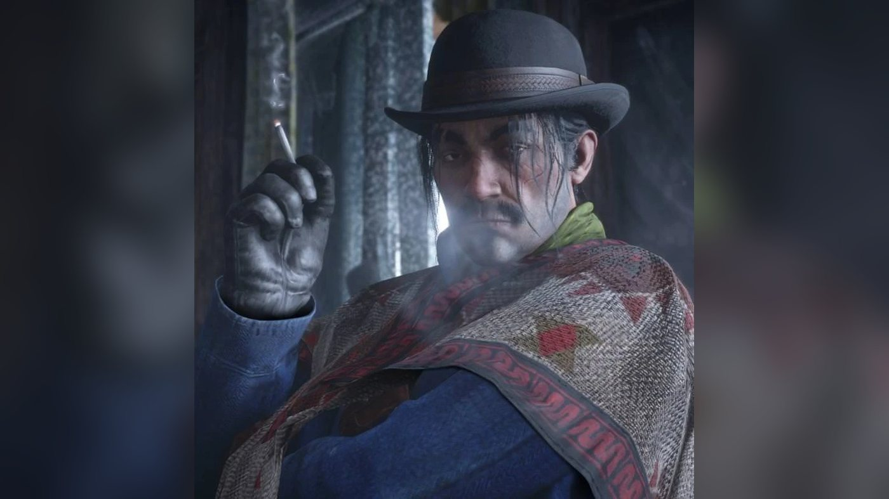
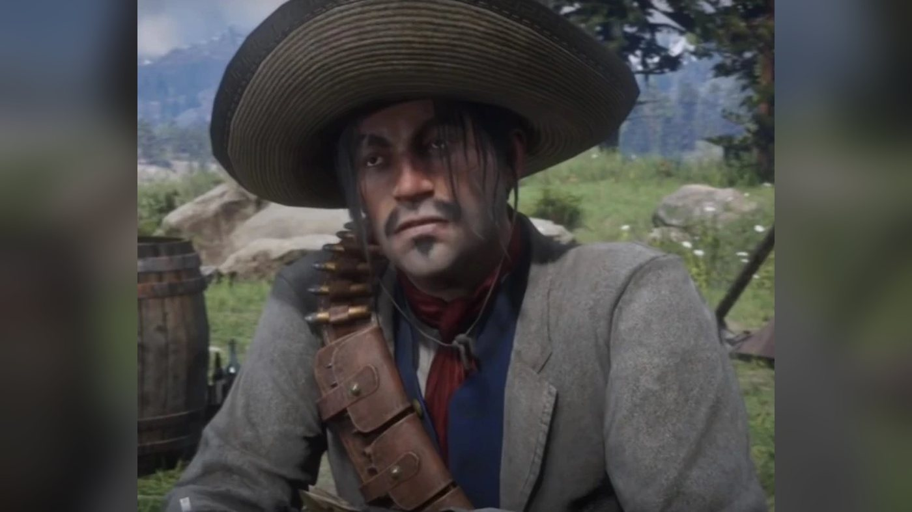
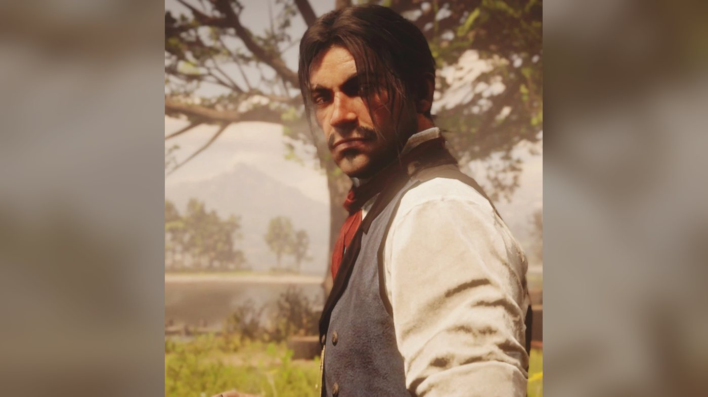
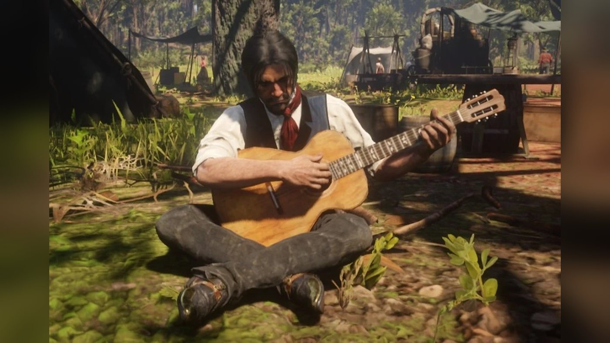

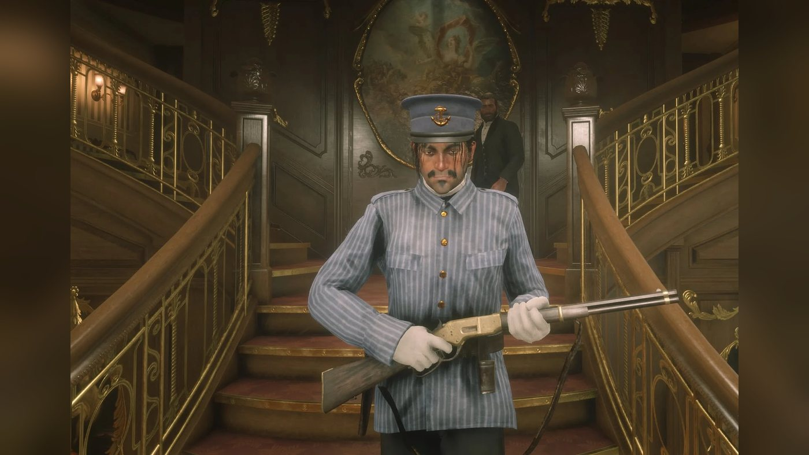
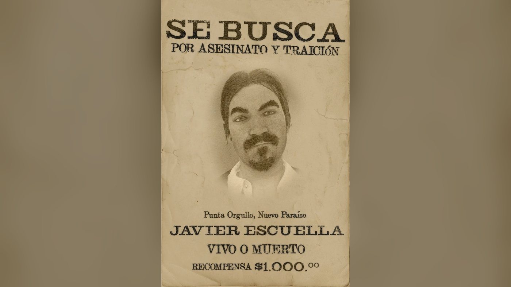
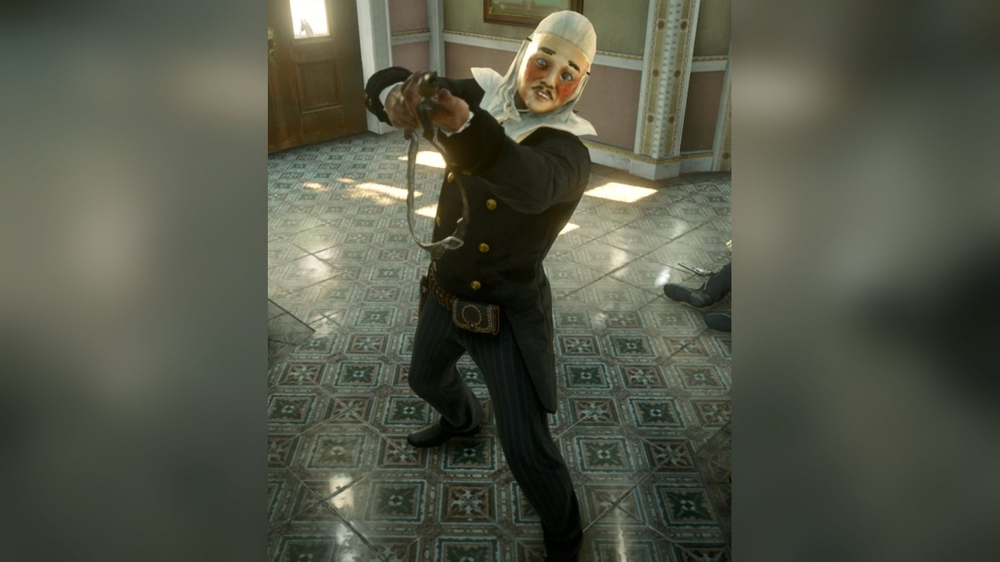
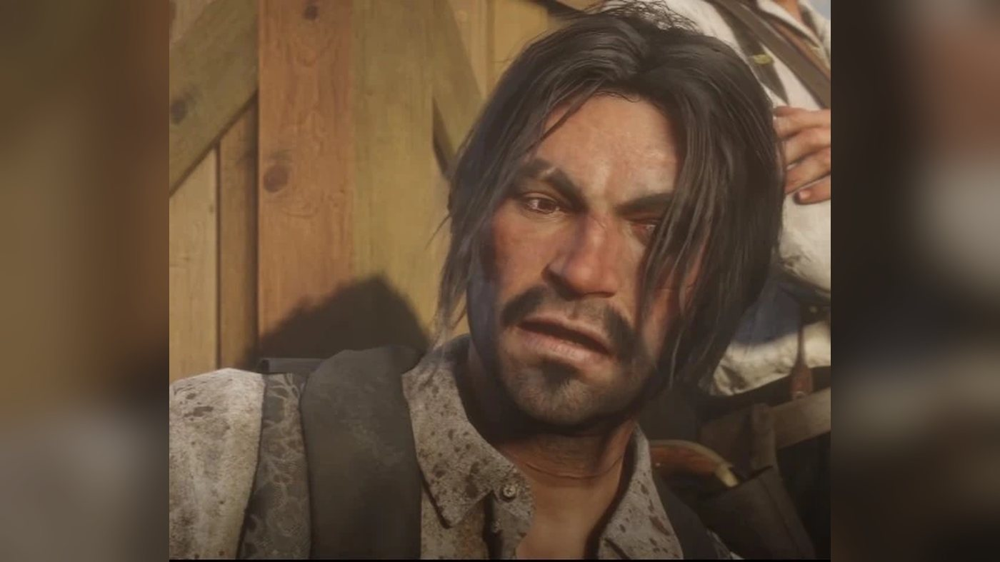
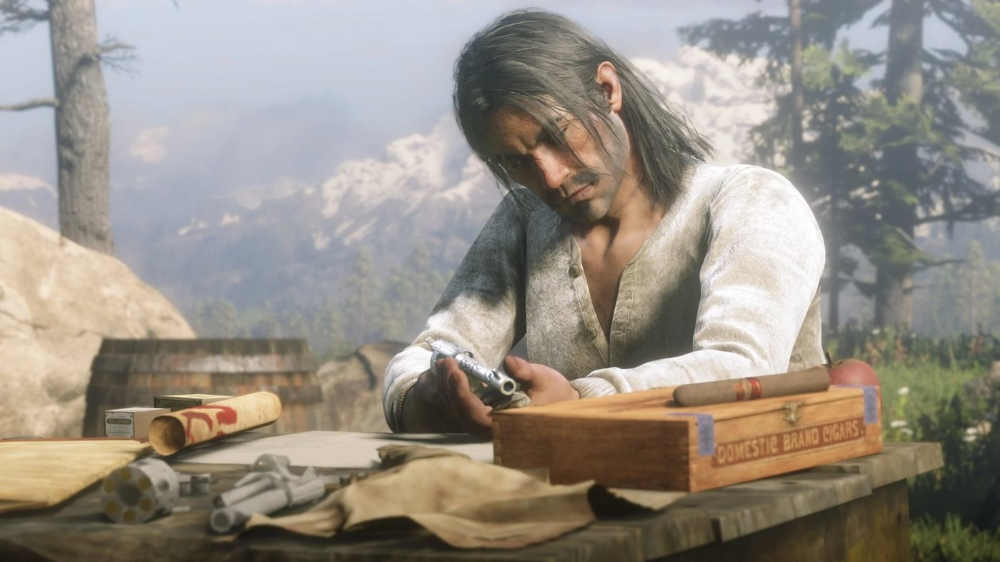
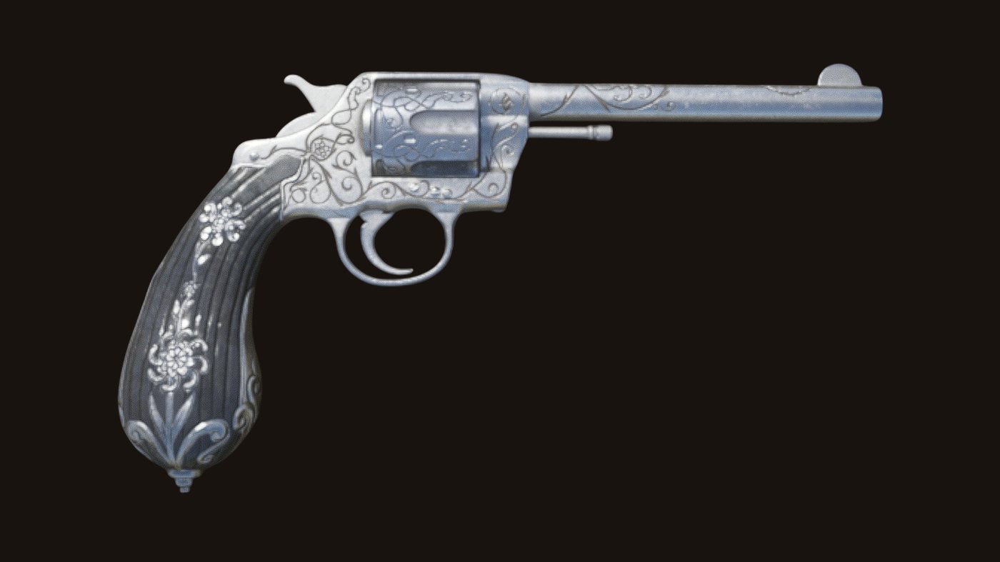
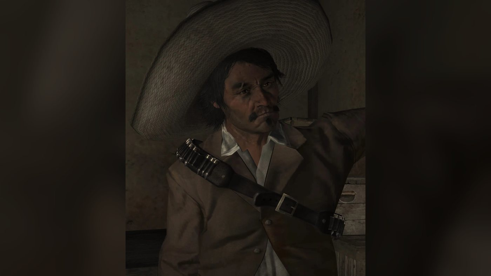
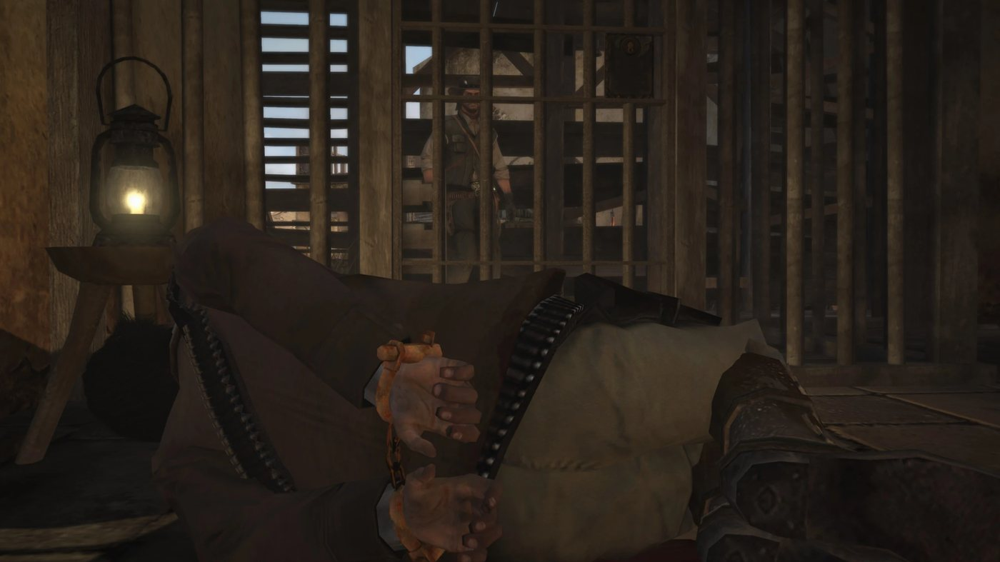